freiesMagazin November 2014
(ISSN 1867-7991)
Topthemen dieser Ausgabe
Spacewalk – Teil 3: Automatisierung und KickstartIm letzten Teil dieser Artikel-Serie in freiesMagazin 09/2014 wurde die Registrierung und Verwaltung von Client-Systemen besprochen. Im dritten Teil geht es um die Automatisierung von Administrationsaufgaben und das Provisionieren neuer Systeme. (weiterlesen)
Minetest – Block für Block zur kantigen Traumwelt
Gerade ein wenig Freizeit und nichts zu tun? Eigentlich der richtige Moment für ein kurzes Spielchen. Für Echtzeitstrategie, Abenteuerspiel oder Wirtschaftssimulation ist die Zeit aber zu knapp und bei einem Karten- oder Memoryspiel mittendrin aufhören? Nichts ärgert den geneigten Spieler mehr. Es bedarf also eines Spiels, in dem das Spielen selbst das Ziel ist und man jederzeit anfangen und aufhören kann. Ein kreatives Spielchen wie Minetest zum Beispiel. (weiterlesen)
FreeDOS – Totgesagte leben länger
Das Betriebssystem DOS, das Disk Operating System, ist immer noch quicklebendig und manchmal entdeckt man es an den merkwürdigsten Orten wieder. Der Artikel gibt einen Einblick in DOS und zeigt, wie man es auch heute noch in Form von FreeDOS für verschiedene Aufgabengebiete nutzen kann. (weiterlesen)
Zum Index
Inhalt
Linux allgemein
Definition Freier Inhalte
Der Oktober im Kernelrückblick
Anleitungen
Spacewalk – Teil 3: Automatisierung und Kickstart
ADempiere – der lange Weg zur kurzen Installation eines Open-Source-ERP-Systems
Software
Minetest – Block für Block zur kantigen Traumwelt
FreeDOS – Totgesagte leben länger
Community
Rezension: Git – kurz & gut
Rezension: Linux-Server mit Debian 7 GNU/Linux
Rezension: Django Essentials
Die dritte Katastrophe – Teil 1
Magazin
Editorial
Leserbriefe
Veranstaltungen
Vorschau
Konventionen
Impressum
Zum Index
Editorial
Siebter freiesMagazin-Programmierwettbewerb
Seit circa einem Monat läuft der siebte Programmierwettbewerb von freiesMagazin, dessen Idee auf dem Lightcycle-Race aus dem Film „Tron“ [1] beruht. Bei der zugehörigen Ankündigung [2] haben sich mittlerweile einige Kommentare mit Fragen und Antworten zum Wettbewerb angesammelt. Wer also Interesse an der Teilnahme hat, sollte sich dort noch einmal umschauen, um dort evtl. offene Fragen beantwortet zu finden. Auf der Webseite des Wettbewerbs [3] haben wir weitere Anmerkungen mit Bugfixes und Erweiterungen der Redaktion zusammgenfasst. In der Redaktion stehen wir natürlich auch gerne für Anregungen und Fragen unterNeues für Spielefans und Nostalgiker
Bei vielen Fans von Computerspielen kommen bei der Erwähnung des Namens LucasArts Erinnerungen an ihren ersten PC hoch – inklusive der ewig langen Wartepausen und der Floppy Disks, die natürlich auch dazu gehören. Auch wenn es heutzutage bessere Grafiken gibt, lebt ein Computerspiel besonders von seiner Spielidee und diese macht LucasArts-Spiele wie „Indiana Jones and the Fate of Atlantis“ oder „Sam & Max: Hit the Road“ für viele Computerspieler (neben „Monkey Island“ natürlich) zu den besten Adventure-Spielen, die sie bis heute gespielt haben. Viele von Ihnen werden sich daher freuen, dass auf GOG.com [4] einige LucasArts-Spieleklassiker neu aufgelegt wurden, von denen unter anderem auch „Indiana Jones and the Fate of Atlantis“ für Linux verfügbar ist [5]. Auch in unserer aktuellen Ausgabe kommen Spielefans mit einem Bericht über Minetest hoffentlich auf ihre Kosten. Und nun wünschen wir Ihnen viel Spaß mit der neuen Ausgabe! Ihre freiesMagazin-Redaktion Links[1] https://de.wikipedia.org/wiki/Tron_(Film)
[2] http://www.freiesmagazin.de/20141001-siebter-programmierwettbewerb-gestartet
[3] http://www.freiesmagazin.de/siebter_programmierwettbewerb
[4] http://www.gog.com/
[5] http://www.gog.com/game/indiana_jones_and_the_fate_of_atlantis
 Beitrag teilen
Beitrag teilen  Beitrag kommentieren
Beitrag kommentierenZum Index
Definition Freier Inhalte
von Dominik Wagenführ Frei oder offen? Die Freie-Software-Welt streitet sich schon länger über diese Begrifflichkeiten und immer wieder sorgen die unterschiedlichen Interpretationen für Missverständnisse in der Kommunikation. Die Open Definition will nun zumindest für Freie Inhalte klären, was offen ist. Soweit verständlich? Die Open Definition wurde Anfang Oktober in der neuen Version 2.0 [1] (nach 1.1) veröffentlicht und soll klar definieren, was man unter dem Begriff „offen“ versteht, den man im Deutschen eher mit „frei“ übersetzen würde – und wobei man wieder in die Bredouille gerät, zwischen Freiheit (etwas zu tun) und Freibier (kostenlos) unterscheiden zu müssen. Dieser letzte Unterschied der Kostenfreiheit, der bei Freien Lizenzen [2] wichtig ist, stellt sich bei Freien Inhalten [3] gemäß der Open Definition aber nicht. Denn allgemeiner ausgeweitet auf den Begriff „Wissen“ heißt es auf der Webseite (Zitat): „Knowledge is open if anyone is free to access, use, modify, and share it — subject, at most, to measures that preserve provenance and openness.“ Zu Deutsch: „Wissen ist frei, wenn jeder ohne Beschränkung darauf zugreifen, es benutzen, verändern und teilen kann – mit der maximalen Einschränkung, diese Freiheit und die Urheber beizubehalten.“ Die Open Definition lehnt sich damit sehr stark an der Definition für „Free Cultural Works“ [4] an.Genaue Definition
Damit ein Inhalt/ein Werk offen – oder frei – sein kann, muss es drei Bedingungen genügen:- Es muss unter einer Freien Lizenz veröffentlicht werden. Die Definition für eine Freie Lizenz leitet sich dabei von der Open Source Definition [5] ab und enthält die vier wichtigen Grundsätze, dass jeder ohne Einschränkung das Programm ausführen, untersuchen, verändern und verbreiten darf.
- Das Werk muss als Ganzes ohne besondere Kosten (ausgenommen sind einmalige Herstellungskosten, z. B. für das Brennen einer CD) zur Verfügung gestellt werden. Lizenzangaben müssen dem Werk beiliegen.
- Das Werk muss in einem offenen Format vorliegen, das keinen Patenten oder besonderen Lizenzen unterliegt. Dabei ist die Definition eines offenes Formates aber so weit abgeschwächt, dass es ausreicht, wenn ein FLOSS-Programm [6] den Inhalt verarbeiten kann.
Erlaubte Einschränkungen
Die Nutzung einer Freien Lizenz erlaubt dabei gewisse Einschränkungen. So ist es erlaubt, dass der Urheber immer mit angegeben werden muss. Zusätzlich darf die Lizenz auch ein Copyleft [7] haben, sodass abgeleitete Inhalte unter einer gleichen Lizenz veröffentlicht werden müssen. Es gibt noch mehr Einschränkungen, diese sind jedoch die zwei wichtigsten. Damit kann man per Definition die (meisten) Creative-Commons-Lizenzen [8] für Freie Inhalte benutzen und erfüllt damit die Open Definition. Das Copyleft wird beispielsweise durch die Share-Alike-Klausel sichergestellt. Die beiden Creative-Commons-Lizenztypen „Non-Derivative“ (keine Ableitung erlaubt) und „Non-Commercial“ (kommerzielle Nutzung nicht erlaubt) fallen dabei nicht unter die Open Definition, wie auch der CC-Lizenzseite [9] mit dem Hinweis „Dies ist keine Free-Culture-Lizenz.“ entnommen werden kann. Dies bezieht sich dabei auf die Definition für „Free Cultural Works“ [4] von oben, auf der die Open Definition basiert. Explizit soll an der Stelle noch einmal darauf hingewiesen werden, dass sich Freie Software-Lizenzen nicht für die Lizenzierung von Freien Inhalten eignen. Bei Software steht der Quellcode im Mittelpunkt, der weitergegeben und bearbeitet werden kann. Bei kreativen Werken wie Musik wäre es unpraktikabel, wenn die komplette Partitur oder jede einzelne Tonspur mit verfügbar gemacht werden muss. Eine Liste der Freien Lizenzen, die die Bedingungen oben erfüllen und für Freie Inhalte geeignet sind, findet man auf der Open-Definition-Webseite [10]. Links[1] http://opendefinition.org/od/
[2] https://de.wikipedia.org/wiki/Freie_Lizenz
[3] http://de.wikipedia.org/wiki/Freie_Inhalte
[4] http://freedomdefined.org/Definition
[5] http://opensource.org/docs/osd
[6] https://de.wikipedia.org/wiki/FLOSS
[7] http://de.wikipedia.org/wiki/Copyleft
[8] http://de.creativecommons.org/
[9] http://creativecommons.org/choose/?lang=de
[10] http://opendefinition.org/licenses/
| Autoreninformation |
| Dominik Wagenführ (Webseite) ist seit mehreren Jahren Chefredakteur bei freiesMagazin. Er hat bei dem Magazin angefangen, weil es ihm wichtig war und immer noch ist, Wissen für alle frei zugänglich zur Verfügung zu stellen. |
Beitrag teilen Beitrag kommentierenZum Index
Der Oktober im Kernelrückblick
von Mathias Menzer Basis aller Distributionen ist der Linux-Kernel, der fortwährend weiterentwickelt wird. Welche Geräte in einem halben Jahr unterstützt werden und welche Funktionen neu hinzukommen, erfährt man, wenn man den aktuellen Entwickler-Kernel im Auge behält.Linux 3.17
In die Oktober-Ausgabe von freiesMagazin hatte es der Kernel 3.17 mal wieder gerade nicht mehr geschafft, aber die fertige Version gab Torvalds ebenfalls am ersten Sonntag des Monats frei [1]. Der Entwicklungszyklus dauerte 63 Tage und liegt damit in der Norm der vergangenen drei Jahre. Auch von der Anzahl der Änderungen her passt 3.17 gut ins Bild, jedoch fällt diesmal die hohe Zahl entfernter Quelltextzeilen auf. Es sind diesmal mehr entfernt als hinzugefügt worden, wodurch der Kernel tatsächlich kleiner wurde – wenn auch nur geringfügig. Dies kommt eher selten vor, da in der Entwicklung des Linux-Kernels meist nur neue Funktionen, Treiber und Werkzeuge hinzukommen und nur selten alte Zöpfe abgeschnitten werden. Doch diesmal kamen an verschiedenen Stellen Aufräumarbeiten und die Auswirkungen von Code-Optimierungen zum Tragen, wie beispielsweise an der Interprozesskommunikation. Doch Linux 3.17 hat nicht nur Verluste zu beklagen, an dieser Stelle soll vielmehr auf die Zugewinne eingegangen werden.Sicherheit
Bereits im Vorfeld wurde der neue Systemaufruf getrandom() diskutiert. Das im Zuge der OpenSSL-Schwachstellen [2] zu Beginn dieses Jahres gestartete Projekt LibreSSL [3] bemängelte, dass unter Linux keine „sicheren“ Zufallszahlen erzeugt werden könnten. Diese kommen normalerweise von dem zeichenorientierten Gerät /dev/random [4] bzw. /dev/urandom. Ersteres liefert nur Zufallszahlen, solange sich diese auf Basis nicht berechenbarer Einflüsse wie Benutzereingaben oder Netzwerkverkehr erzeugen lassen. Gehen dem System die „guten“ Zufallszahlen aus, blockiert /dev/random, während urandom noch Zahlen beisteuern kann, die jedoch aus dem zuvor eigentlich erschöpften Pool generiert werden und sich von einem Angreifer berechnen lassen. Doch bereits der Zugriff auf diese Dienste kann von einem Angreifer unterbunden werden, wenn alle Datei-Deskriptoren belegt sind. Dies zwingt den jeweiligen Prozess dann, ohne Zufallswerte und damit leicht berechenbar zu arbeiten. getrandom() behebt nun gleich mehrere dieser Probleme, indem es Zufallswerte ohne Rückgriff auf das Dateisystem direkt an einen Prozess liefert. Zudem kann mittels eines speziellen Flags das Auffüllen des Zufallszahlen-Pools erzwungen werden, bevor der Bedarf des aufrufenden Prozesses befriedigt wird. Ebenfalls vor dem Hintergrund der Systemsicherheit steht eine Neuerung von Kexec. Dies ist eine Funktion, die es erlaubt, einen anderen Kernel – nicht gezwungenermaßen ein Linux-Kernel – in den Speicher zu laden und zu booten. Normalerweise wird hierfür das BIOS bzw. UEFI benötigt, welches in letzterem Fall auf aktuellen Systemen mit Secure Boot eine Komponente besitzt, die nur das Ausführen signierter Kernel erlaubt. Kexec konnte bislang dazu genutzt werden, um Secure Boot und damit diese Einschränkung zu umgehen. Linux-Entwickler um Matthew Garrett befürchteten, dass auf diese Weise veränderte und gar schädliche Windows-Systeme gestartet werden könnten. Kexec kann nun die Signatur eines Kernels prüfen, bevor dieser gestartet wird und ermöglicht den Linux-Distributoren damit, einen entsprechend Secure-Boot-tauglichen Kernel auszuliefern.Grafik
Bereits in Linux 3.12 wurde das Rendern der Bildschirmanzeige vom Umschalten der Grafikmodi getrennt (siehe „Der November im Kernelrückblick“, freiesMagazin 12/2013 [5]). Dies ermöglicht beispielsweise auch, dass Anwendungen die Grafik-Einheit zum Rendern von Grafiken nutzen können, die aktuell nicht auf dem Bildschirm dargestellt werden. Diese Funktion wird nun standardmäßig aktiviert. Im Radeon-Umfeld wurde das Dynamische Powermanagement für einige Chip-Architekturen aktiviert, die unter anderem in ATIs Radeon-HD-69xx-Serie vorkommen. Bidirectional Application Powermanagement (BAPM) für ATI/AMD-Prozessoren mit integrierter Grafikeinheit kann nun über einen eigenen Parameter aktiviert werden. Bislang war dies deaktiviert, da es zu Kompatibilitätsproblemen gekommen war. BAPM soll die Verteilung von Ressourcen zwischen Grafik- und Rechen-Einheiten dieser APUs [6] verbessern.Schnittstellen
USB/IP ist ein Projekt, das daran arbeitet, USB-Geräte über das Netzwerk freizugeben. Dies ermöglicht beispielsweise den direkten Zugriff auf USB- Speichermedien, Webcams, USB-Lautsprecher, Drucker oder Scanner eines anderen PCs. Faktisch wird hierbei die USB-Kommunikation in IP-Pakete verpackt über das Netzwerk geschickt, sodass die normalen Gerätetreiber auf dem zugreifenden Rechner genutzt werden können. Thunderbolt [7] ist eine in erster Linie von Apple-Geräten bekannte Schnittstelle, die jedoch von Intel mitentwickelt wurde und zwischenzeitlich auch in PCs Anwendung findet. Die Schnittstelle bietet quasi eine Zusammenfassung von PCI-Express- und Displayport-Anschlüssen plus einer Spannungsversorgung und stellt für Anwendungen wie beispielsweise Dockingstationen für Notebooks eine Konkurrenz zu USB dar. Ein neuer Thunderbolt-Treiber stellt die Unterstützung für Thunderbolt-Controller von Intels Ivy-Bridge-Prozessoren zur Verfügung. Zum Abschluss bringt Linux 3.17 für die Spieler unter den Linux-Nutzern auch ein kleines Goodie mit: Die Unterstützung für den Spiele-Controller der Xbox One, der sich in einigen Details von den älteren der Xbox 360 unterscheidet und daher einen überarbeiteten Treiber benötigt. Eine ausführliche Auflistung der Neuerungen bietet diesmal wieder das englischsprachige Portal Kernelnewbies.org [8].Linux 3.18
Mitte Oktober schloss Torvalds das Merge Window für Linux 3.18 (vorerst) mit dem -rc1 [9]. Die erste Entwicklerversion kommt mit einer durchschnittlichen Anzahl an Änderungen daher und fällt auch bezüglich der Menge an Änderungen an den Quelltextzeilen nicht aus dem Rahmen. Einige weitere Pull Requests zog Torvalds dann noch in Linux 3.18-rc2 [10] nach, sodass diese Version im Prinzip als Abschluss des Merge Windows zu werten ist. Insbesondere bringt die zweite Entwicklerversion OverlayFS mit [11], auf das Torvalds bereits bei Veröffentlichung des -rc1 hinwies. OverlayFS bietet die Möglichkeit, über ein nicht beschreibbares Dateisystem eine Ebene zu legen, in der Änderungen durchgeführt werden können. Diese Zwischenebene kann gegebenenfalls auf einem separaten, beschreibbaren Datenträger gespeichert und später wieder geladen werden – und damit beispielsweise ein Live-System quasi veränderbar machen. Anwendung finden solche Overlay-Systeme sowohl bei den beschriebenen Live-Systemen als auch beim aktuell sehr präsenten Container-Virtualisierungssystem Docker, das jedoch mit AuFS auf eine ältere Umsetzung dieser Methodik setzt. Links[1] https://lkml.org/lkml/2014/10/5/126
[2] https://de.wikipedia.org/wiki/Heartbleed
[3] https://de.wikipedia.org/wiki/LibreSSL
[4] https://de.wikipedia.org/wiki//dev/random
[5] http://www.freiesmagazin.de/freiesMagazin-2013-12
[6] https://de.wikipedia.org/wiki/Accelerated_Processing_Unit
[7] https://de.wikipedia.org/wiki/Thunderbolt_(Schnittstelle)
[8] http://kernelnewbies.org/Linux_3.17
[9] https://lkml.org/lkml/2014/10/19/233
[10] https://lkml.org/lkml/2014/10/26/137
[11] http://www.pro-linux.de/-0h21549f
| Autoreninformation |
| Mathias Menzer (Webseite) behält die Entwicklung des Linux-Kernels im Blick, um über kommende Funktionen von Linux auf dem Laufenden zu bleiben. |
Beitrag teilen Beitrag kommentierenZum Index
Spacewalk – Teil 3: Automatisierung und Kickstart
von Christian Stankowic Im letzten Teil dieser Artikel-Serie in freiesMagazin 09/2014 [1] wurde die Registrierung und Verwaltung von Client"=Systemen besprochen. Im dritten Teil geht es um die Automatisierung von Administrationsaufgaben und das Provisionieren neuer Systeme.Automatisierung von Administrationsaufgaben
Echtzeit-Systemverwaltung
Wie bereits im ersten Teil dieser Artikel-Serie erwähnt wurde, können Systeme auch in Echtzeit verwaltet werden. Gegenüber dem konventionellen Mechanismus, bei welchem Systeme in periodischen Abständen nach ausführbaren Aufgaben abfragen, werden registrierte Systeme über das Jabber-Protokoll über ausführbare Aufgaben informiert. Hierzu muss auf den Systemen der „Open Source Architecture Daemon“ osad installiert werden (das Paket befindet sich im Spacewalk-Client-Repository):# yum install -y osad
Darüber hinaus muss noch der Port 5222/tcp geöffnet werden, damit die Systeme
überhaupt über das Jabber-Protokoll kontaktiert werden können. Zu diesem Zweck kann
das komfortable Werkzeug system-config-firewall-tui verwendet werden, mit welchem
Netzwerkports geöffnet werden können:
# yum install -y system-config-firewall-tui
# system-config-firewall-tui
Alternativ können die Ausnahmen auch direkt zur Laufzeit mit
iptables [2] definiert werden:
# system-config-firewall-tui
# iptables -A INPUT -m state --state NEW -m tcp -p tcp --dport 5222 -j ACCEPT
Nachdem der Dienst installiert wurde, kann er gestartet werden. Es empfiehlt
sich, den Dienst automatisch beim Bootvorgang zu starten:
# chkconfig osad on
# service osad start
# service osad start
Anwendung von Errata
Exkurs: Errata
Software-Aktualisierungen können nicht nur in Form konventioneller Updates, sondern auch als Errata bereitgestellt werden. Während ein Update keine Aussage über die Art der Aktualisierung trifft, existieren für Errata mehrere Kategorien:- Sicherheits-Update (Security Advisory)
- Bugfix (Bugfix Advisory)
- Funktionserweiterung (Product Enhancement Advisory)
Errata für CentOS
Red Hat Enterprise Linux-Kunden erhalten Errata automatisch im Rahmen des Downloads aktualisierter Software-Pakete. CentOS-Benutzer erhalten hier keine Errata, obwohl die Code-Basis äquivalent ist. Das CEFS-Projekt hat es sich zur Aufgabe gemacht, hierfür eine Lösung anzubieten. Der CEFS-Dienst erzeugt aus Nachrichten der CentOS-Announce Mailing-Liste, in welcher Updates verkündet werden, automatisch entsprechende Errata-Informationen. Diese Informationen liegen in Form eines XML-Dokuments auf dem Webserver des CEFS-Projekts und können mithilfe eines Skripts automatisiert in Spacewalk übernommen werden. Dieses Skript (errata-import.pl) kann auf der CEFS-Webseite [5] heruntergeladen werden. Das Skript benötigt neben einem Channel Administrator-Login auch eine Liste der Software-Kanäle, für die Errata importiert werden sollen. Wenn das Skript regelmäßig ausgeführt werden soll (z. B. als nächtlicher Cronjob) empfiehlt es sich, hierfür einen dedizierten Benutzer anzulegen, da die Login-Information im Klartext über zwei Shell-Variablen zur Verfügung gestellt werden müssen. Ein beispielhafter Cronjob könnte wie folgt aussehen:wget -N http://cefs.steve-meier.de/errata.latest.xml
SPACEWALK_USER=““ SPACEWALK_PASS=““ /opt/tools/errata-import.pl --server localhost --errata errata.latest.xml --include-channels=centos6-updates-x86_64,centos7-updates-x86_64 --publish
Die erste Zeile lädt die aktuellen Errata-Informationen herunter, sofern neue
Informationen vorliegen (Schalter -N). Die zweite Zeile importiert
Errata-Informationen für zwei CentOS 6 und 7-Update Kanäle. Der Schalter
--publish bewirkt, dass importierte Errata auch automatisch veröffentlicht
werden – sie tauchen somit gleich in der System-Übersicht von Spacewalk auf.
Im konkreten Beispiel der CentOS-Errata fehlen jedoch noch detaillierte
Fehlerbeschreibungen und CVE-Kennzeichner. Standardmäßig zeigen über CEFS
importierte Errata lediglich den Errata-Typ und einen Online-Verweis auf den
entsprechenden Red Hat-Artikel an. Die fehlenden Detail-Informationen können
über Red Hat Security Announcements (RHSA) während des Imports angegeben
werden. Red Hat veröffentlicht sicherheitsrelevante Update-Informationen in
regelmäßigen Abständen ebenfalls als XML-Dokument – da Red Hat Enterprise
Linux in leicht abgewandelter Form die Code-Basis für CentOS darstellt,
können diese Informationen problemlos übernommen werden. Um diesen Vorgang zu
automatisieren, muss der Cronjob angepasst werden:
SPACEWALK_USER=““ SPACEWALK_PASS=““ /opt/tools/errata-import.pl --server localhost --errata errata.latest.xml --include-channels=centos6-updates-x86_64,centos7-updates-x86_64 --publish
wget -N http://www.redhat.com/security/data/oval/com.redhat.rhsa-all.xml.bz2
bunzip2 -f com.redhat.rhsa-all.xml.bz2
wget -N http://cefs.steve-meier.de/errata.latest.xml
SPACEWALK_USER=““ SPACEWALK_PASS=““ /opt/tools/errata-import.pl --server localhost --errata errata.latest.xml --include-channels=centos6-updates-x86_64,centos7-updates-x86_64 --rhsa-oval=com.redhat.rhsa-all.xml --publish
Die erste Zeile lädt das aktuelle RHSA-Dokument herunter, das Skript
errata-import.pl berücksichtigt diese Informationen mithilfe des Schalters
--rhsa-oval.
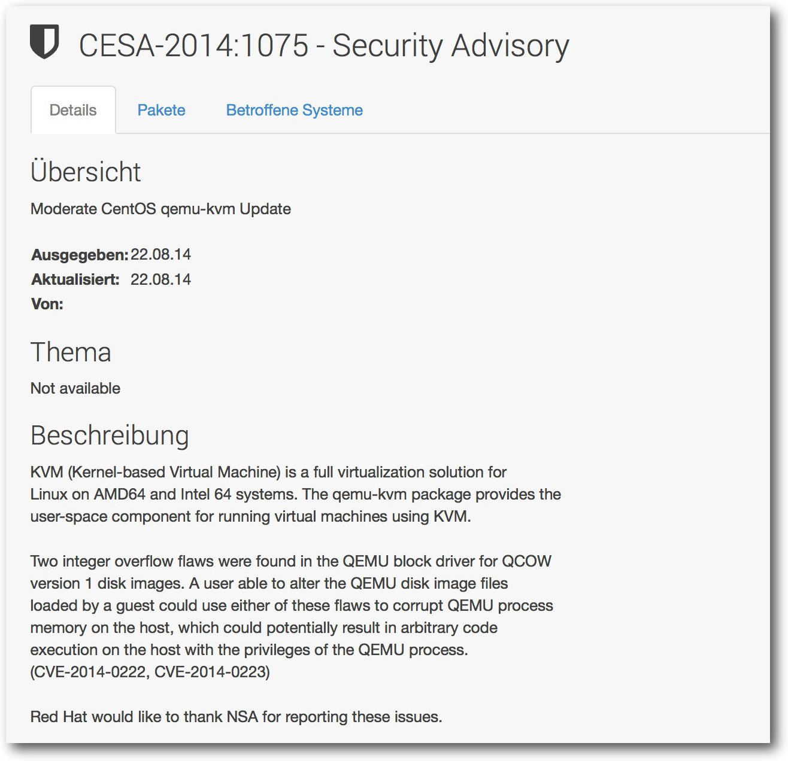bunzip2 -f com.redhat.rhsa-all.xml.bz2
wget -N http://cefs.steve-meier.de/errata.latest.xml
SPACEWALK_USER=““ SPACEWALK_PASS=““ /opt/tools/errata-import.pl --server localhost --errata errata.latest.xml --include-channels=centos6-updates-x86_64,centos7-updates-x86_64 --rhsa-oval=com.redhat.rhsa-all.xml --publish
Beispiel eines Erratum mit Red Hat Security Announcement-Informationen.
Automatische Installation
Errata können automatisiert installiert werden – so kann man beispielsweise Test-Systeme stets auf dem aktuellen Stand halten. Hierzu müssen lediglich die System-Informationen der entsprechenden Systeme über die Spacewalk-Oberfläche editiert und die Option „Automatische Anwendung relevanter Errata“ aktiviert werden. Diese Installation wird täglich über die Spacewalk-eigene Aufgaben-Verwaltung Taskomatic in der Taskgruppe „errata-queue-bunch“ vorgenommen – liegen relevante Errata für ein System vor, werden diese bei entsprechender Konfiguration übernommen. Standardmäßig findet dieser Vorgang nachts um 02:00 Uhr statt. Diese Uhrzeit lässt sich jedoch auch über die Web-Oberfläche unterhalb „Admin -> Aufgabenpläne“ ändern.Archivierung von Aufgaben
Bereits im letzten Artikel wurde die Aufgabenverwaltung von Spacewalk kurz erläutert. Sämtliche über die Software ausgeführten Aufgaben werden als „Aktionen“ in der Datenbank dokumentiert. Ein Vorteil dieses Mechanismus ist, dass so ein detailliertes Wartungsprotokoll der verwalteten Systeme vorliegt. Erfahrungsgemäß werden diese Informationen aber nicht dauerhaft in einer derartigen Genauigkeit benötigt. Oftmals wird schlichtweg vergessen, diese Aktionen zu entfernen, was insbesondere bei größeren Systemlandschaften eine unnötige Belastung der Datenbank darstellt. 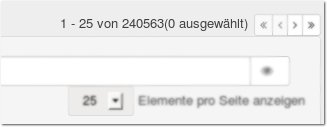Ansammlung „vergessener“ Aktionen.
Abgeschlossene und fehlerhafte Aktionen können archiviert werden, um die Übersichtlichkeit zu erhalten. Es empfiehlt sich jedoch auch, nicht mehr benötigte (also auch archivierte) Einträge restlos zu entfernen. Dieser Vorgang lässt sich über die Web-Oberfläche ausführen oder mit einem Skript als Cronjob vollständig automatisieren. Auf GitHub gibt es hierfür ein Python-Skript namens arsa.py [6], mit welchem man sämtliche Aktionen entfernen kann. Das Skript benötigt hierzu die Login-Informationen eines Administratorkontos des Spacewalk-Systems. Standardmäßig fragt das Skript diese Informationen beim Ausführen ab – soll die Ausführung jedoch als Cronjob erfolgen, muss eine Datei mit den Login-Daten im Klartext (ein sogenanntes authfile) erstellt werden. Um sicherzustellen, dass diese Informationen nicht missbraucht werden, muss diese Datei die Dateiberechtigungen 0600 aufweisen. Die erste Zeile der Datei enthält den Benutzernamen, die zweite Zeile das dazugehörige Passwort. arsa.py verfügt u. a. über folgende Parameter:
- -l / --list-only:
- simuliert den Vorgang lediglich
- -r / --remove:
- entfernt Aktionen, nachdem sie archiviert wurden
- -f / --include-failed:
- archiviert fehlgeschlagene Aktionen
- -a / --authfile:
- Pfad zur Datei, die die Login-Daten enthält
$ /pfad/arsa.py -rf -a /pfad/user -q
Es empfiehlt sich dringend, einen solchen Cronjob wöchentlich oder monatlich
auszuführen, um einer unnötigen Fragmentierung der Datenbank entgegen zu
wirken.
System-Provisionierung
Systeme lassen sich komfortabel und standardisiert über Spacewalk installieren, dieser Vorgang wird auch „Kickstart“ genannt. Insbesondere wenn eine größere Anzahl an Systemen provisioniert werden soll, kann hier viel Zeit gespart werden, da manuelle Arbeiten weitestgehend entfallen. Neue Systeme booten aus dem Netzwerk und werden automatisch installiert.Aufbau
Damit Systeme aus dem Netzwerk booten können, werden ein DHCP- und TFTP-Server benötigt. Der DHCP-Server kann entweder auf dem Spacewalk-Server oder einem anderen System installiert werden. In der Konfiguration des DHCP-Servers müssen zwei benutzerdefinierte Optionen gesetzt werden, damit bootende Systeme die benötigten Dateien vom entsprechenden Spacewalk-Server beziehen:- next-server(66): IP des Spacewalk-Servers
- filename(67): pxelinux.0
Kickstart-Aufbau in Spacewalk.
Je nach DHCP-Software werden diese Einstellungen für einzelne Hosts oder gesamte Netzwerk-Bereiche übernommen – in jedem Fall muss der Server auch BOOTP-Clients zulassen. Auf dem Spacewalk-System muss ein TFTP-Server installiert und aktiviert werden. Bei den meisten Distributionen erfordert das die Installation des xinetd-Superservers. Weiterhin ist es auch notwendig, dass UDP-Port 69 in der Firewall des Spacewalk-Systems geöffnet wird:
# yum install -y xinetd tftp-server
# chkconfig xinetd on
# service xinetd restart
Damit der TFTP-Server aktiviert wird, muss mit einem Editor die Datei
/etc/xinetd.d/tftp bearbeitet werden. Die Variable disable muss auf den
Wert no gesetzt werden. Anschließend
wird der TFTP-Dienst durch Neuladen
der xinetd-Konfiguration gestartet:
# chkconfig xinetd on
# service xinetd restart
# service xinetd reload
Vor dem ersten Kickstart ist es noch notwendig, benötigte PXE-Dateien zu
installieren. Cobbler ist in der Lage, die eigene Konfiguration und
Funktionsfähigkeit zu überprüfen – so werden beispielsweise fehlende
Software-Pakete erkannt. Es empfiehlt sich, diese Funktion nach der
Installation der PXE-Dateien auszuführen:
# yum install -y cobbler-loaders
# cobbler check
Fehlermeldungen geben Aufschluss darüber, wie erkannte Probleme
behoben werden können.
# cobbler check
Kickstart-Distributionen und -Profile
Um ein System zu provisionieren, werden ein Kickstart-Profil und eine Kickstart-Distribution benötigt. Das Profil enthält alle notwendigen Informationen zur Installation (Software-Auswahl, Partitionierung, etc.) und wird von der Distribution gestartet. Eine Kickstart-Distribution ist ein minimales Boot-Abbild einer Linux-Distribution, das lediglich für Installationen verwendet werden kann. Diese Abbilder verfügen nicht über eigene Software-Pakete, diese werden über den Webserver des Spacewalk-Servers bezogen. Der erste Schritt ist die Erstellung einer Kickstart-Distribution. Die für Kickstart benötigten Dateien befinden sich auf den Netzwerkinstallation-Medien (auch „Netinstall“ oder „Netboot“ genannt), je nach Distribution variieren jedoch die benötigten Ordnerstrukturen. Eine Möglichkeit ist es, den kompletten Inhalt des Netinstall-Mediums auf den Spacewalk-Server zu kopieren. Auf GitHub existiert jedoch auch ein Skript namens mkelfs.py [7], welches den Download der benötigten Dateien für einige der von Spacewalk unterstützten Linux-Distributionen automatisiert. Auf Wunsch wird auch automatisch eine Kickstart-Distribution erstellt. Hierzu ist es jedoch notwendig, dass ein entsprechender Software-Kanal erstellt wurde, da die Kickstart-Distribution mit diesem Kanal verknüpft wird. Aktuell werden die Linux-Distributionen CentOS, Scientific Linux und Fedora unterstützt. Mithilfe des Kommandos# ./mkelfs.py -d fedora -r 20 -x x86_64 -c
lässt sich so ein manueller Vorgang stark
vereinfachen. Das Kommando lädt die für Kickstart benötigten Dateien für Fedora 20 (64-bit)
herunter. Anschließend wird eine Kickstart-Distribution erstellt.
Es gibt u. a. die folgenden Parameter, um das Verhalten des Skripts zu
steuern:
- -r / --release:
- definiert die zu verwendende Version
- -x / --arch:
- legt die Architektur fest (i686, x86_64)
- -o / --distro:
- die herunterzuladende Distribution (CentOS, Scientific Linux oder Fedora)
- -c / --create-distribution:
- erstellt eine Kickstart-Distribution, erfordert gültige Administrator-Anmeldedaten auf dem System
- -b / --channel:
- gibt den Namen des Software-Kanals an, sofern dieser nicht automatisch erkannt werden konnte
Beispiel: CentOS 6
Kickstart-Profile bieten umfangreiche Einstellungsmöglichkeiten, was den Einstieg anfangs komplex gestaltet. Dieser Abschnitt soll exemplarisch das Vorgehen aufzeigen, um CentOS 6.5-Systeme (64-bit) automatisiert zu provisionieren. Zuerst werden mit spacewalk-common-channels die notwendigen Software-Kanäle zur Verfügung gestellt, bevor die notwendige Kickstart-Distribution heruntergeladen werden kann. Das Skript mkelfs.py befindet sich in diesem Beispiel unterhalb /opt/tools:# spacewalk-common-channels -u admin -a x86_64 centos6,centos6-updates
# spacewalk-repo-sync –c centos6-x86_64 -t yum
# spacewalk-repo-sync –c centos6-x86_64-updates -t yum
# /opt/tools/mkelfs.py -r 6.5 -x x86_64 -c
Damit das System nach der Provisionierung direkt mit Spacewalk verwaltet
werden kann, muss auch das entsprechende Spacewalk Client-Repository
eingebunden werden:
# spacewalk-repo-sync –c centos6-x86_64 -t yum
# spacewalk-repo-sync –c centos6-x86_64-updates -t yum
# /opt/tools/mkelfs.py -r 6.5 -x x86_64 -c
# spacewalk-common-channels -u admin -a x86_64 spacewalk22-client-centos6
# spacewalk-repo-sync –c spacewalk22-client-centos6-x86_64 -t yum
Wenn alle Befehle ohne Fehlermeldung ausgeführt wurden, stehen die
Software-Kanäle und die Kickstart-Distribution zur Verfügung. Anschließend
wird ein Aktivierungsschlüssel über das Menü
„Systeme -> Aktivierungs-Schlüssel -> Neuen Schlüssel erstellen“ erstellt.
Es werden folgende Informationen hinterlegt:
# spacewalk-repo-sync –c spacewalk22-client-centos6-x86_64 -t yum
- Beschreibung:
- CentOS6-x86-64
- Gebrauchs-Limit:
- Maximale Anzahl der Systeme, die automatisiert provisioniert werden sollen (falls relevant)
- Basis-Channels:
- CentOS 6 (x86_64)
- Zusatzberechtigungen:
- Provisioning (damit Konfigurationsmanagement und Remote"=Befehle verwendet werden können)
- Label:
- KS-CentOS65-x86-64
- Basis-Channel:
- CentOS 6 (x86_64)
- Kickstartbarer Tree:
- KD-centos-6.5-x86_64
Reiter „Kickstart-Details“
Die wichtigste Einstellung in dieser Rubrik dürften die Zuordnungen zusätzlicher Sub-Channels sein – in diesem Beispiel ist es ratsam, die Sub-Channels für CentOS-Updates und die Spacewalk-Clientanwendungen zu aktivieren. Unterhalb der erweiterten Optionen können zahlreiche Parameter, die das Kickstart-Verhalten steuern, definiert werden. Besonders interessant sind hier die Optionen „poweroff“ und „network“. Während ersteres einen provisionierten Host nach einer erfolgreichen Installation ausschaltet, definiert der zweite Parameter das Netzwerk. Anstatt einer automatischen DHCP-Konfiguration kann auch eine statische IP-Zuordnung vorgenommen werden:--bootproto=static –ip=192.168.1.100 --netmask=255.255.255.0 --gateway=192.168.1.1 --nameserver=192.168.1.100
Treten bei der System-Provisioinierung immer wieder Probleme auf, können in
dieser Rubrik Pre- und Post-Skripte protokolliert werden. So können nach der
fehlerhaften Installation diese Protokolle auf dem Zielsystem analysiert
werden.
Reiter „System-Details“
In dieser Rubrik können weitere Detail-Informationen des zu provisionierenden Systems definiert werden. Neben Gebietsschema-Einstellungen (Locale) können beispielsweise auch das Spacewalk Konfigurations-Management und Remote-Befehle aktiviert werden. Zwei weitere, darüber hinaus sehr wichtige Rubriken beinhalten GPG- und SSL-Einstellungen sowie das Partitionslayout. In der Rubrik „GPG & SSL“ müssen die GPG-Schlüssel zusätzlicher zu verwendender Software-Kanäle aktiviert werden. In diesem konkreten Beispiel müssen die CentOS-Schlüssel [8] und Spacewalk-Schlüssel [9] ausgewählt werden. Damit diese zur Verfügung stehen müssen sie im Menü „Systeme -> Kickstart -> GPG- und SSL-Schlüssel“ erstellt werden. Ebenfalls anpassungswürdig ist das Partitionslayout. Zusätzliche Partitionen und Dateisysteme werden mit den Optionen --part und --fstype angegeben. Dateisysteme können mit einer absoluten (--size) oder maximalen Größe (--maxsize) in MiB angegeben werden. Standardmäßig wird ein LVM-Setup angewendet, es können jedoch auch konventionelle Partitionslayouts definiert werden. Nachfolgend zwei Beispiele für Partitionslayouts. Ein einfaches Layout ohne LVM könnte wie folgt aussehen:- ext3-Partition für /boot, 200 MB
- ext4-Partition für /, mindestens 4 GB, gesamter freier Speicherplatz wird zugewiesenen
- Swap-Partition mit empfohlener Größe (variiert je nach Arbeitsspeicher)
part /boot --fstype=ext3 --size=200
part / --fstype=ext4 --size=4096 --grow
part swap --recommended
Ein erweitertes Layout könnte LVM verwenden:
part / --fstype=ext4 --size=4096 --grow
part swap --recommended
- LVM Volume Group (vg_system), wobei das physisches LVM-Volume sich über die erste Festplatte im System erstreckt
- ext3-Partition für /boot, 200 MB
- Partitionen für /, /home, /tmp, /usr und /var mit jeweils benutzerdefinierten Größen
- Swap-Partition mit empfohlener Größe (variiert je nach Arbeitsspeicher)
part /boot --fstype=ext3 --size=200
part pv.01 --size=1000 --grow
volgroup vg_system pv.01
logvol / --vgname=vg_system --name=lv_root --size=1024
logvol /home --vgname=vg_system --name=lv_home --size=1024
logvol /tmp --vgname=vg_system --name=lv_tmp --size=1024
logvol /usr --vgname=vg_system --name=lv_usr --size=3072
logvol /var --vgname=vg_system --name=lv_var --size=4096
logvol swap --vgname=vg_system --name=lv_swap --recommended
part pv.01 --size=1000 --grow
volgroup vg_system pv.01
logvol / --vgname=vg_system --name=lv_root --size=1024
logvol /home --vgname=vg_system --name=lv_home --size=1024
logvol /tmp --vgname=vg_system --name=lv_tmp --size=1024
logvol /usr --vgname=vg_system --name=lv_usr --size=3072
logvol /var --vgname=vg_system --name=lv_var --size=4096
logvol swap --vgname=vg_system --name=lv_swap --recommended
Reiter „Software“
Zu installierende Software-Pakete und Paketgruppen werden in dieser Rubrik definiert. Paketgruppen sind an einem vorangestelltem „@“-Zeichen zu erkennen. Standardmäßig wird lediglich ein Grundsystem mit der Base-Paketgruppe installiert. Werden darüber hinaus zusätzliche Software-Pakete benötigt, sind diese hier anzugeben.Reiter „Aktivierungs-Schlüssel“
Wenn das System während der Installation automatisch aktiviert und registriert werden soll, muss hier ein gültiger, zuvor erstellter, Aktivierungsschlüssel ausgewählt werden.Reiter „Skripte“
In dieser Rubrik können Shell-, Ruby-, Perl- oder Python-Skripte erstellt werden. Diese können entweder auf dem zu installierenden System oder im Installationssystem ausgeführt werden. Bei der Erstellung des Skripts muss neben dem eigentlichen Inhalt noch der zu verwendende Interpreter definiert werden. Soll ein Skript im Live-System ausgeführt werden, muss der Haken bei nochroot gesetzt werden. Jedes Skript kann entweder vor (Pre-Skript) oder nach (Post-Skript) der Installation ausgeführt werden. Es ist auch möglich, den Erfolg des Installationsprogramms vom Rückgabewert des Skriptes abhängig zu machen. Ein Aktivieren des Hakens erroronfail sorgt dafür, dass Skriptfehler die Installation abbrechen. Nach Erstellung des Kickstart-Profils muss das zu installierende System zum entsprechenden Profil mittels cobbler zugeordnet werden. Verfügbare Kickstart-Profile werden wie folgt aufgelistet:# cobbler profile list
…
KS-CentOS6-x86_64:1:SpacewalkDefaultOrganization
Nun kann mit Hilfe des folgenden Befehls eine Kickstart-Zuordnung hergestellt werden, wobei die MAC-Adresse und ein Hostname benötigt werden:
…
KS-CentOS6-x86_64:1:SpacewalkDefaultOrganization
# cobbler system add --name=hostname --profile=KS-CentOS6-x86_64:1:SpacewalkDefaultOrganization –mac=... --hostname=hostname.domain.loc
Zuletzt müssen noch die vorgenommenen Änderungen an cobbler übermittelt werden, sodass
einem
Boot aus dem Netzwerk nichts mehr im Wege steht:
# cobbler sync
Nun taucht der soeben erstellte Systemeintrag in der Systemliste von Cobbler auf.
Das System kann somit jetzt aus dem Netzwerk gebootet werden.
# cobbler system list
hostname
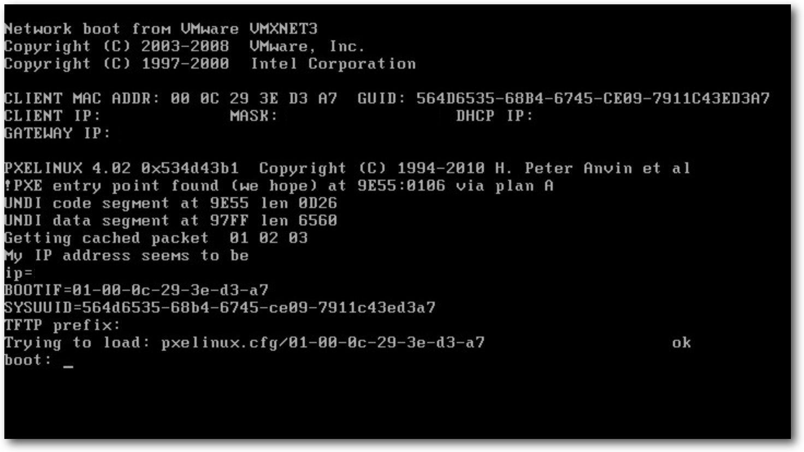hostname
Aus dem Netzwerk bootendes System.
Der nächste Teil dieser Artikel-Serie wird sich der Verwaltung von Solaris-basierenden Systemen widmen. Links
[1] http://www.freiesMagazin.de/freiesMagazin-2014-09
[2] https://de.wikipedia.org/wiki/Iptables
[3] https://de.wikipedia.org/wiki/Common_Vulnerabilities_and_Exposures
[4] https://fedoraproject.org/wiki/EPEL
[5] http://cefs.steve-meier.de/
[6] https://github.com/stdevel/arsa
[7] https://github.com/stdevel/mkelfs
[8] http://mirror.centos.org/centos/RPM-GPG-KEY-CentOS-6
[9] http://yum.spacewalkproject.org/RPM-GPG-KEY-spacewalk-2012
| Autoreninformation |
| Christian Stankowic (Webseite) beschäftigt sich seit 2006 mit Linux und Virtualisierung. Nachdem er privat Erfahrungen mit Debian, CRUX und ArchLinux sammeln konnte, widmet er sich seit seiner Ausbildung zum Fachinformatiker insbesondere RHEL, CentOS, Spacewalk und Icinga. |
Beitrag teilen Beitrag kommentierenZum Index
ADempiere – der lange Weg zur kurzen Installation eines Open-Source-ERP-Systems
von Jochen Stärk Freie Software ist nicht zwangsläufig schlechter als kommerzielle Software, ADempiere [1] ist beispielsweise ein durchaus mächtiges ERP-System [2], das es mit einigen kommerziellen Konkurrenten aufnehmen kann. Einzig der Support ist so frei wie die Software selbst, ein Anspruch auf Zusatzleistungen besteht nicht. Dieser – freie – Artikel fängt damit an, wenigstens die Installationsanleitung auf einen aktuellen Stand zu bringen.Einleitung
Es gibt bedauernswerte Individuen, die irgendwann einmal gehört haben, es gäbe irgendein Programm, das möglicherweise genau das tut, was sie gerade bräuchten. Dieses Programm weigert sich dann aber häufig hartnäckig, sich einfach so installieren oder geschweige denn benutzen zu lassen. Auch wenn ich mir zwischenzeitlich mit der selbstgeschriebenen Open-Source-Lösung Gnuaccounting [3] behalf, blieb die Neugier über das widerspenstige Programm, in dem Fall ADempiere. Nach neun Jahren gelang immerhin die Installation und dabei stellten sich zwei Dinge heraus. Erstens: Wenn man weiß wie, ist ebendiese sogar ziemlich einfach. Und zweitens: Das Programm hat zum Glück eine andere Nische besetzt. Die Arbeit an der eigenen Lösung waren also nicht ganz umsonst. Die letzte noch halbwegs brauchbare Installationsanleitung [4] bezieht sich auf Ubuntu 11.04. Da das dort behandelte ADempiere die langzeitunterstützte (Long Term Support, LTS) Version ist, das verwendete Ubuntu aber nicht, macht die Installation mittlerweile einige Klimmzüge erforderlich. Die in der Installation erwähnten Pakete lassen sich beispielsweise ohne Umwege nicht mehr installieren. So wurde mit Ubuntu 11.04 nur PostgreSQL 8 mitgeliefert, weswegen in der Installationsanleitung für ADempiere vom eigentlich bevorzugten PostgreSQL 9 auf 8 umgestellt werden musste. In Ubuntu 14.04 LTS hingegen ist der Umweg für die Installation auf PostgreSQL 8 nicht mehr nötig, weil hier PostgreSQL 9 mitgeliefert wird.Installation
Hier also die Anleitung zur Installation auf einer virtuellen Maschine mit Ubuntu 14.04 LTS. Zwei GB RAM sind mehr als genug, einzig die von VirtualBox vorgeschlagenen acht GB für die Festplatte sind zu knapp, da sollte man mindestens zehn GB vorsehen. Als Nutzer wird ein adempiere-Nutzer mit sudo-Rechten angelegt. Es macht für ADempiere übrigens keinen Unterschied, ob man eine 32- oder 64-Bit-Version von Ubuntu verwendet. Nach der Installation der benötigten Pakete postgresql und openjdk-6-jdk lädt man sich ADempiere herunter, entpackt es, verschiebt es und macht es ausführbar:$ wget http://sourceforge.net/projects/adempiere/files/ADempiere%20Official%20Release/Adempiere%203.7.0-LTS/Adempiere_370LTS.tar.gz/download
$ tar xvfz download
# mv Adempiere /opt/
$ rm download
$ cd /opt/Adempiere
# chmod +x *.sh utils/*.sh
ADempiere besteht intern aus einer typischen Drei-Schichten-Architektur: Der
Nutzer kann mit seinem Client, der hauptsächlich die Darstellung übernimmt, über
das Netzwerk auf (mindestens) einen Anwendungsserver zugreifen, der die
Programmlogik ausliefert und selbst wiederum per Netzwerk auf (mindestens) einen
Datenbankserver zugreift. Das erlaubt performanten und trotzdem zentral
verwalteten, massiv parallelen Betrieb von bei Bedarf mehreren hundert
gleichzeitig auf die Unternehmensdaten zugreifenden Nutzern. Um das Programm
schlichtweg mal auszuprobieren, wurden der Client sowie Anwendungs- und
Datenbankserver auf einem einzigen Rechner installiert.
Um ein bisschen Netzwerk kommt man jedoch nicht herum, 127.0.0.1
beziehungsweise localhost funktionieren in den Einstellungen nämlich
spätestens dann nicht besonders gut, wenn man über das Netzwerk darauf zugreifen
will. Kennt man seine IP-Adresse im lokalen Netz nicht, hilft ifconfig. Bei
dieser Installation unter VirtualBox ist das 10.0.2.15 aus einem A-Subnetz,
sprich mit 8 Bit Präfixlänge. Das Vertrauen (trust) in dieses lokale Netz
schreibt man in die /etc/postgresql/9.3/main/pg_hba.conf.
$ tar xvfz download
# mv Adempiere /opt/
$ rm download
$ cd /opt/Adempiere
# chmod +x *.sh utils/*.sh
# sh -c "echo 'host all all 10.0.2.15/8 trust' >> /etc/postgresql/9.3/main/pg_hba.conf"
Weiterhin muss PostgreSQL Verbindungsanfragen auch aus diesem Netz
entgegennehmen und Passwörter generell verschlüsseln:
# sh -c "echo \"listen_addresses = '*'\" >> /etc/postgresql/9.3/main/postgresql.conf"
# sh -c "echo 'password_encryption = on' >> /etc/postgresql/9.3/main/postgresql.conf"
Danach kann PostgreSQL und schließlich das ADempiere-Setup gestartet werden:
# sh -c "echo 'password_encryption = on' >> /etc/postgresql/9.3/main/postgresql.conf"
# service postgresql restart
$ cd /opt/Adempiere
$ ./RUN_setup.sh
Dort trägt man als Java-VM „OpenJDK“ ein und überschreibt mit seiner IP-Adresse
10.0.2.15 die voreingestellten Werte in Applikations-Server und in
Datenbank-Server. Als Web-Port trägt man 8080 und für SSL 8443 ein. Der
Datenbank-Typ ist das eben konfigurierte Postgres.
Klickt man den Button „Test“ wird ein SSL-Zertifikat angelegt, als Common Name
kann man 10.0.2.15 verwenden. Nach Klick auf „Speichern“, „Ja ich verstehe“
und „OK“ dauert es erst mal bis zu fünf Minuten bis alles kompiliert ist.
$ cd /opt/Adempiere
$ ./RUN_setup.sh
Start des Servers
Anschließend importiert man die Datenbank und startet den Server:$ cd /opt/Adempiere/utils
$ ./RUN_ImportAdempiere.sh
$ ./RUN_Server2.sh
Wie man an der Meldung sieht, dauert allein dieser Teil des Starts auch mal über
eine Minute:
$ ./RUN_ImportAdempiere.sh
$ ./RUN_Server2.sh
19:59:56,426 INFO [Server] JBoss (MX MicroKernel) [4.2.3.GA (build: SVNTag=JBoss_4_2_3_GA date=200807181417)] Started in 1m:47s:962ms
Über den Browser kommt man jetzt schon auf https://10.0.2.15:8443/.
Theoretisch könnte man hier die Java-Web-Start-Version benutzen. Die
Standalone-Version startet man am besten in einem neuen Terminal:
$ cd /opt/Adempiere
$ ./RUN_Adempiere.sh
Der AppServer ist, wie zu erwarten, unter der http://10.0.2.15/ zu erreichen.
Danach kann man die Verbindung zur Applikation und anschließend die Verbindung zur
Datenbank testen. Noch dreimal auf das Häkchen-Symbol klicken und man ist
„drin“.
Gerüchten zufolge soll es mit ADempiere übrigens auch möglich sein, Rechnungen
zu schreiben. Ich wäre an genauen Details sehr interessiert und habe mir
die nächsten neun Jahre noch nichts anderes vorgenommen.
Links$ ./RUN_Adempiere.sh
[1] http://www.adempiere.com/
[2] https://de.wikipedia.org/wiki/Enterprise-Resource-Planning
[3] http://www.gnuaccounting.org/
[4] http://www.adempiere.com/Installing_ADempiere_3.7.0_on_Ubuntu_11.04
| Autoreninformation |
| Jochen Stärk (Webseite) ist Diplom-Wirtschaftsinformatiker (BA) und arbeitet als selbstständiger PHP-Programmierer in Frankfurt am Main. Seit 2005 schreibt er an seiner eigenen Open-Source-Buchhaltung Gnuaccounting. |
Beitrag teilen Beitrag kommentierenZum Index
Minetest – Block für Block zur kantigen Traumwelt
von Michael Weiss Gerade ein wenig Freizeit und nichts zu tun? Eigentlich der richtige Moment für ein kurzes Spielchen. Für Echtzeitstrategie, Abenteuerspiel oder Wirtschaftssimulation ist die Zeit aber zu knapp und bei einem Karten- oder Memoryspiel mittendrin aufhören? Nichts ärgert den geneigten Spieler mehr. Es bedarf also eines Spiels, in dem das Spielen selbst das Ziel ist und man jederzeit anfangen und aufhören kann. Ein kreatives Spielchen wie Minetest [1] zum Beispiel.In aller Kürze …
Als Spieler steuert man in Minetest eine Figur in der Ich-Perspektive in einer zufällig generierten Blockwelt. Dort ist es möglich, Blöcke abzubauen, ins eigene Inventar zu befördern und an anderer Stelle wieder zu platzieren. Das Verbinden diverser Rohstoffe miteinander [2] oder sogar das Einschmelzen [3] bieten Vielfalt und weitere Auswahlmöglichkeiten. So kreiert der Spieler nach eigenen Wünschen eine Welt um sich herum und verspielt so manche Minute vor dem PC. Wer vor lauter Klötzchen den Block nicht mehr sieht, für den ist der nachfolgende Abschnitt gedacht. 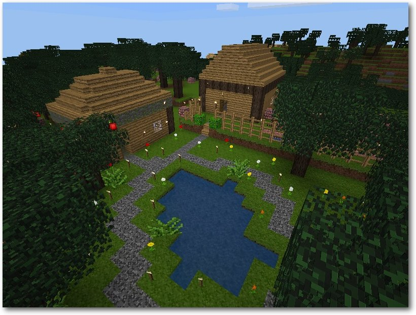Grob, klotzig und kreativ: Minetest.
… und etwas ausführlicher
Beim erstmaligen Spielstart wird eine an die Realität angelehnte Welt, bestehend aus verschiedenartigen Klötzchen [4], generiert, in welcher der Spieler Sekunden später selbst eintaucht, um ein Teil von ihr zu werden. Besagte Klötzchen lehnen sich in ihren Eigenschaften an bekannte Materialien aus dem echten Leben an, was den Spieler kurz nach Spielbeginn bei der Gestaltung seines Umfeldes dazu veranlasst, Werkzeuge [5] statt seinen bloßen Händen einzusetzen, um Hindernisse zu beseitigen. Blöcke aus Erde können deutlich schneller mit einer Schaufel, steinige mit einer Hacke und hölzerne mit einer Axt entfernt werden. Was den Spieler dazu bringt, nicht nur sprichwörtlich an der Oberfläche der Spielwelt zu kratzen, sondern auch tief in das Innere vorzudringen, sind Kohle und die verschiedenen Erze wie Eisen, Diamant und MESE. Damit lassen sich bessere Werkzeuge herstellen, und je hochwertiger das verwendete Material ist, desto schneller lässt sich damit arbeiten und umso länger hält das Werkzeug letztlich. Sind die ersten Einheiten Holz, Stein und diverse hilfreiche Utensilien im Inventar gelandet, steht es dem Spieler frei, mit diesen Ressourcen anzustellen, was seine Fantasie hergibt. Neue Spieler begnügen sich anfangs oft mit einer eigenen Behausung. Stimmt die Chemie und Minetest kann seine volle Wirkung entfalten, streichen nicht selten einige Spielstunden ins Land, in denen Landschaften mit ganzen Dörfern, prachtvollen Bauten oder riesigen Modellen real existierender Gebilde erschaffen werden. Eine gotische Kirche mit zugehörigem Vorplatz wird selbst im kreativen Modus – alle Materialien sind hier uneingeschränkt verfügbar und müssen vorher nicht abgebaut werden – viel Zeit in Anspruch nehmen. Größe, Material und Struktur legt bei jedem Gebilde der Spieler fest. Es gibt, neben einigen physikalischen Einschränkungen, nahezu keine Regeln. Eine 1:100 Kopie der Enterprise? Kein Problem [6]! Der Londoner Big Ben bestehend aus Erde und Wolle? Der Spieler entscheidet selbst darüber, wie er seine Welt gestaltet, und wenn ihm nach einem harten Tag danach ist, alles mit Lava zu überschütten, ist dies sein gutes Recht. Etwas anders gestaltet sich die Situation auf einem der vielen verfügbaren Mehrspielerservern im Internet. Hier gilt es, wenn schon nicht in Kooperation, zumindest in Koexistenz mit anderen Spielern Bauten zu errichten und die Landschaft zu verändern. Das Verändern oder sogar Zerstören fremder Gebilde und Landschaften in deren Umfeld ist möglich, aber verpönt und wird international mit „griefing“ (Tatbestand) und „Griefer“ (Täter) [7] tituliert. Ohne ausreichende Erklärung oder Entschuldigung führt ein solches Verhalten häufig zur temporären, wenn nicht permanenten Verbannung vom Server, was alle vom Spieler erreichten Fortschritte, sein Inventar und schließlich seine investierte Arbeit verloren gehen lässt.Erste Gebilde sind meist etwas … minimalistisch.
Anderes Spiel, bekanntes Prinzip
Wer bis zu diesem Punkt vermutet, dass es sich bei Minetest um einen Rechtschreibfehler handelt und eigentlich das bekannte Minecraft [8] gemeint ist, der irrt. Minetest ist seit 2010 der Versuch einer freien Implementierung des kommerziellen Kult-Spiels unter Verwendung von C++ und Lua-Skript [9] statt Java. Auch wenn Spielprinzip und Optik sich sehr ähneln, beharren die zum Spiel beitragenden Entwickler darauf, dass Minetest nicht Minecraft ist und auch nicht werden soll. Deutlich wird dies oftmals erst im Detail. So verzichtet Minetest aus Überzeugung auf die in Minecraft notwendige Werkbank. Der 3x3-Felder große Bereich [10] zum Kombinieren von Rohstoffen ist direkt in das Spielerinventar integriert. Auch auf nächtlichen Besuch von feindlich gesinnten Kreaturen wird man in der grundlegenden Variante des Spiels verzichten müssen. In wie weit sich dies durch den Spieler selbst verändern lässt und wie einfach das ist, dazu später mehr. Es ist auch hervorzuheben, dass es sich bei Minetest um einen Zusammenschluss aus den Minetest-Spieldateien (minetest-game) und der Minetest-Engine [11] handelt. Das nötige Wissen vorausgesetzt, ist es findigen Entwicklern möglich, auf Basis der Minetest-Engine ein völlig anderes Spiel zu erschaffen. Derlei gibt es zuhauf, auch darauf wird in diesem Artikel noch eingegangen werden. 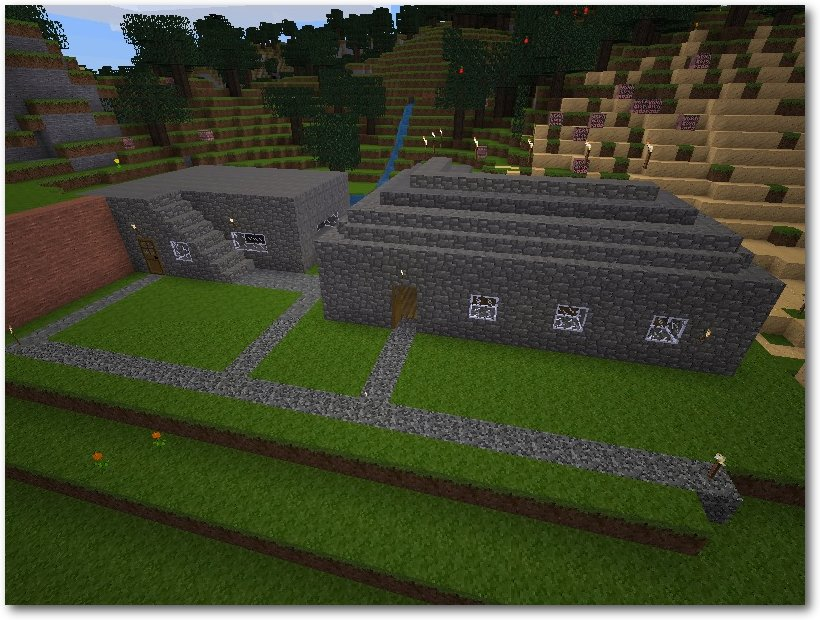Nicht selten, aber schön: Steinhaussiedlungen.
Installation
Im Gegensatz zu Windowsbenutzern, die das Spiel entweder via EXE-Datei installieren oder via ZIP-Datei an eine beliebige Stelle entpacken [12], muss der geneigte Linux-Nutzer etwas mehr Handarbeit investieren, um in den Genuss des Spiels zu kommen. Distributionen wie Debian, Ubuntu, Linux Mint und ihre Derivate haben zwar meist eine Version des Spiels in ihren Quellen vorrätig, ob diese allerdings die aktuellste mit allen neuen Funktionen und der Kompatibilität zu den Mehrspielerservern ist, ist fraglich. Auf der sicheren Seite ist man, je nach Distribution, mit separaten aktuelleren Paketquellen [13] oder aber mit einer selbstgebauten eigenen Variante der aktuellsten Version des Spiels. Der Selbstbau wird nachfolgend genauer beleuchtet.Manuelle Installation
Die hier aufgeführten Pakete sollten auf dem System installiert und verfügbar sein, um den Prozess nicht in einem Hagel aus Fehlermeldungen zum Scheitern zu verdammen: build-essential, libirrlicht-dev, cmake, libbz2-dev, libpng12-dev, libjpeg8-dev, libxxf86vm-dev, libgl1-mesa-dev, libsqlite3-dev, libogg-dev, libvorbis-dev und libopenal-dev. Dies vorausgesetzt bezieht man den Quellcode von der GitHub-Seite des Projekts [14] und entpackt diesen an einer beliebigen Stelle, z. B. via$ wget https://github.com/minetest/minetest/archive/master.zip
$ unzip master.zip
$ mv minetest-master minetest
was Herunterladen, Entpacken und Umbenennen
ausführt. Alternativ kann man
auch den bunteren Weg mit Internetbrowser und Maus wählen.
In dieser Anleitung wird davon ausgegangen, dass sich der Code unter
/home/user/minetest beziehungsweise äquivalent ~/minetest befindet.
Bislang befindet sich nur die weiter oben erwähnte Engine und ein sehr
grundlegender Development
Test [15] in Rohform auf
dem System. Es fehlen noch die aktuellen Dateien des eigentlichen Spiels,
des minetest-game [16]. Diese
lassen sich fix mit der nun folgenden Kombination aus Konsolenbefehlen
beziehen.
Hierzu wechselt man zuerst in das Spielverzeichnis der Minetest-Engine:
$ unzip master.zip
$ mv minetest-master minetest
$ cd ~/minetest/games
An Ort und Stelle lädt man den Quellcode für minetest-game herunter und
entpackt diesen hier:
$ wget https://github.com/minetest/minetest_game/archive/master.zip
$ unzip master.zip
$ mv minetest_game-master minetest_game
Der Ordner wird umbenannt, da er nicht der Norm entspricht und
man mit manchen Modifikationen Abhängigkeitsprobleme haben kann.
Zum Schluss navigiert man wieder ins Hauptverzeichnis und stößt den
Make-Prozess an:
$ unzip master.zip
$ mv minetest_game-master minetest_game
$ cd ..
$ cmake . -DRUN_IN_PLACE=1
$ make -j2
Der cmake-Befehl prüft und konfiguriert jetzt alles Benötigte, um im Anschluss
eine nicht systemweit installierte Version des Spiels bauen zu können. Es
darf während dieses Vorgangs nicht zu einem auf der Konsole ausgegeben
Fehler kommen (Hinweise sind ok). make dagegen ist die eigentliche
Kompilierung von Minetest. Sollte es zu Fehlern beim Kompilieren kommen,
stehen zum einen das internationale Forum [17] und zum anderen der
englische wie auch deutschsprachige
Minetest-IRC-Kanal [18] zur aktiven Problembeseitigung
bereit.
Nach Vollendung liegt unter ~/minetest/bin die soeben kompilierte, ausführbare Datei
minetest sowie eine weitere Datei
minetestserver [19]. Das Spiel startet der geneigte Spieler
mit der Datei minetest.
$ cmake . -DRUN_IN_PLACE=1
$ make -j2
Was wir alleine nicht schaffen...
Prinzipiell spielt man seine eigene Karte auf seinem eigenen Computer. Wer zu vereinsamen droht, der sucht sich einen der verfügbaren Mehrspieler-Server [20] im Internet. Vorteil ist unter anderem, dass man neue Leute kennenlernt, Mitspieler hat, mit denen sich Großprojekte realisieren oder Siedlungen auf Servern anlegen lassen. Der im Spiel integrierte Chat („T“-Taste) bietet grundlegende Kommunikation, besser sind externe Sprachlösungen wie Mumble [21]. Der Nachteil liegt insofern auf der Hand, als dass man die Verfügbarkeit der Spielwelt jemand anderem überlässt. Verschwindet die mit Sorgfalt gestaltete Welt unerwartet und ohne Sicherung ins digitale Nirvana, ist Frust meist vorprogrammiert. Traut man sich an das Wagnis Mehrspieler heran, wählt man im Hauptmenü des Spiels die Spalte „client“ aus, trägt die vorher via Internetsuche zusammengetragene Serverdaten und einen eigenen Spielernamen nebst Passwort ein und klickt auf „connect“. Häufig ist es allerdings so, dass Serveradministratoren neuen Spielern nur das Recht zum Sehen, Bewegen und Sprechen („T“-Taste) mitgeben. Wer „interact“ haben möchte, also an der Spielwelt Dinge verändern will, sollte sich im Spiel an einen Moderator wenden. Falls niemand anwesend ist, gilt es, auf eigene Faust weitere Kontaktmöglichkeiten wie IRC, E-Mail oder ein Forum ausfindig zu machen. Nicht selten wird eine entsprechende Meldung eingeblendet, wenn man die Verbindung zum Server aufbaut (Stichwort „Message of the day“).Optik, wechsle dich
Die grafischen Gegebenheiten des Spiels sind gewollt niedrig, um den grundlegenden Charme nicht zu zerstören und außerdem die Hardwareanforderungen niedrig zu halten. Wer mittels Minetest CPU- und GPU-Last in die Höhe treiben möchte, um seine Augen etwas angenehmeren Texturen auszusetzen, der bedient sich an den vielen, zur Verfügung gestellten Texturpaketen [22]. Zur Auswahl stehen neben HD-Texturen und zeichentrickartigen Grafiken ebenso mittelalterlich wirkende Pakete. Diese findet man im Minetest-Forum [23]. Prinzipiell lassen sich alle Texturpakete installieren, indem man das Archiv herunterlädt und im Minetestverzeichnis im Unterverzeichnis textures entpackt. Detaillierter behandelt wird dieses Thema im entsprechenden Forenbeitrag. Ansonsten liegen den meisten Texturpaketen install.txt- oder readme.txt-Dateien bei, die auf die Installationsmaßnahmen hinweisen. 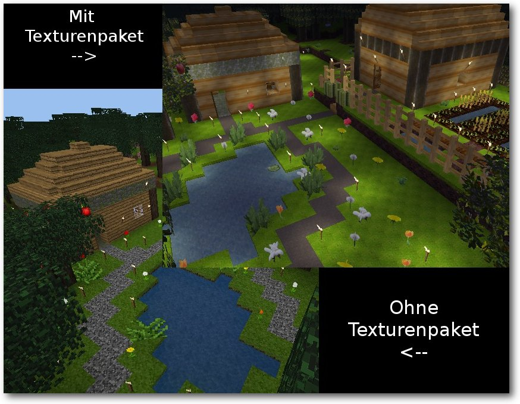Einmal Standardtexturen, einmal HDX von VannessaE.
Darf's ein bisschen mehr sein?
Modifikationen
Wem das im Hauptspiel Dargebotene nicht ausreicht, dem steht es frei, zusätzliche Modifikationen [24] für das minetest-game zu hinterlegen. So lässt sich das aus Minecraft bekannte Redstone zur Gestaltung von Schaltungen über die Modifikation Mesecons [25] nachträglich in den Spielablauf integrieren. Auch weitere dekorative Blöcke [26], freundlich und feindlich gesinnte Kreaturen [27], landwirtschaftliche Erweiterungen [28] oder unzählige Wohngegenstände [29], die in keinem digitalen Eigenheim fehlen sollten, lassen sich auf diesem Wege zum eigentlichen Spiel integrieren. Natürlich gibt es noch sehr viel mehr Modifikationen. Die beste Auflistung findet sich im entsprechenden Beitrag des Minetest-Forums [30]. Im Regelfall werden heruntergeladene Mod-Archive im Minetestverzeichnis unter mods extrahiert und müssen vor dem Spielbeginn über das Hauptmenü für die eigene Spielwelt explizit aktiviert werden. Manche Modifikationen nehmen tiefgreifende Änderungen an der Spielwelt vor. Zum Testen sollte daher eine neue Welt erschaffen oder zumindest die bisherige Spielwelt gesichert werden. Alle angelegten Spielwelten liegen im Ordner worlds.Auf Minetest basierende Spiele
Sollten einzelne Modifikationen nicht das Verlangen nach Andersartigkeit stillen können, stehen noch ganze eigenständige Spiele [31] bereit, entdeckt zu werden. Titel wie Adventuretest [32] liefern auf minetest-game basierenden Spielspaß mit Levelsystem, Fähigkeitenausbau und integrierten Gegnern. Wer in unendlichen Höhen aus dem Nichts ein Wolkenreich erschaffen möchte, dem sei skyblock [33] ans Herz gelegt. Mit akustischem Ambiente und auf den Bergbau fokussiert vertreibt man sich in Dwarves [34] die Zeit. Auch diese Auflistung zeigt nur eine verschwindend kleine Anzahl der zur Verfügung stehenden Spiele. Mehr auch hier im entsprechenden Forenbeitrag im Minetest-Forum. Minetest-basierte Spiele werden als Archiv heruntergeladen und im Minetest-Verzeichnis unter games extrahiert. Aus dem Hauptmenü des Spiels heraus lässt sich dieses dann aktivieren. 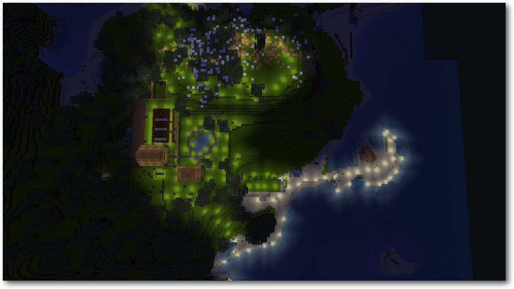Die Landschaft aus der Vogelperspektive.
Schlusswort
Ob man sich an Open Source orientieren möchte, einen persönlich der Kauf von Mojang (das Entwicklerstudio von Minecraft) durch Microsoft [35] stört oder man einfach eine kostenlose Variante vorzieht: Minetest hat seit Beginn der Entwicklung 2010 seinen Weg von einem Ein-Mann-Hobbyprojekt hin zu einem durch die Community betriebenen Open-World-Klötzchenspiel gemeistert. Auch wenn man die oberste Prämisse berücksichtigt (Minetest ist nicht (wie) Minecraft und soll es auch nicht sein), steht der freie Klon dem Original in nahezu nichts nach. Entwickler und Modder schätzen die seit Version 0.4 integrierte LUA-Schnittstelle zur einfachen Modifizierung von Inhalten sehr, was sich jetzt und vermutlich auch in Zukunft durch zahllose Modifikationen, Spielpakete und neuen Projekten auf Github bemerkbar macht. Letztlich ist es aber in erster Linie der Spieler, welcher selbst ausprobiert und entscheidet, ob das Prinzip taugt oder als Zeitverschwendung schnell wieder in Vergessenheit gerät. Links[1] http://www.minetest.net/
[2] http://wiki.minetest.net/Crafting
[3] http://wiki.minetest.net/Smelting
[4] http://wiki.minetest.net/Blocks
[5] http://wiki.minetest.net/Tool
[6] https://forum.minetest.net/viewtopic.php?id=6744
[7] https://de.wikipedia.org/wiki/Griefer
[8] https://de.wikipedia.org/wiki/Minecraft
[9] https://de.wikipedia.org/wiki/Lua
[10] http://wiki.minetest.net/Crafting#Crafting_grid_and_output_slot
[11] http://dev.minetest.net/Engine_structure
[12] http://minetest.net/download#windows_xp_vista_7_8
[13] http://minetest.net/download#linux
[14] https://github.com/minetest/minetest/
[15] http://wiki.minetest.net/Minimal_development_test
[16] https://github.com/minetest/minetest_game
[17] https://forum.minetest.net/
[18] http://minetest.net/irc
[19] http://wiki.minetest.net/Server
[20] http://servers.minetest.net/
[21] http://wiki.mumble.info/
[22] http://minetest.net/texturepacks
[23] https://forum.minetest.net/viewforum.php?f=4
[24] http://minetest.net/mods
[25] http://mesecons.net/
[26] https://forum.minetest.net/viewtopic.php?id=509
[27] https://forum.minetest.net/mmdb/mod/mobf/
[28] https://forum.minetest.net/viewtopic.php?id=2787
[29] https://forum.minetest.net/viewtopic.php?id=2041
[30] https://forum.minetest.net/viewforum.php?f=11
[31] http://wiki.minetest.net/List_of_Games
[32] https://forum.minetest.net/viewtopic.php?f=15&t=9184
[33] https://forum.minetest.net/viewtopic.php?f=15&t=2799
[34] https://forum.minetest.net/viewtopic.php?id=3003
[35] http://www.golem.de/news/minecraft-microsoft-kauft-mojang-1409-109256.html
| Autoreninformation |
| Michael Weiss (Webseite) wechselte aus Neugier circa 2012 von Minecraft zu Minetest und verbringt mit Begeisterung, trotz geringem Bautalent, regelmäßig diverse Stunden in der Klötzchenwelt. |
Beitrag teilen Beitrag kommentierenZum Index
FreeDOS – Totgesagte leben länger
von Christian Imhorst Das Betriebssystem DOS, das Disk Operating System [1], ist quicklebendig und manchmal entdeckt man es an den merkwürdigsten Orten wieder. Dieser Artikel gibt einen Einblick in DOS und zeigt, wie man es heute noch nutzen kann. Dennis McCunney berichtete auf der FreeDOS-Mailingliste [2], dass auf der LACon IV, der 54. World Science Fiction Convention 2006 in Los Angeles, die Registrierung der etwa 5000 Besucher mit DOS erledigt wurde. Dafür kamen eine Reihe älterer Laptops mit 3,5-Zoll-Disketten-Laufwerk, aber ohne Festplatte zum Einsatz. DOS wurde von Diskette gebootet und die Registrierung der Teilnehmer mit einer DBase-III-Datenbank erledigt. Dabei wurde die Boot-Diskette durch eine Daten-Diskette mit den Registrierungsinfos der Besucher ersetzt, sobald DOS und DBase in den Speicher geladen waren. Wenn die Schlange bei der Registrierung zu lang wurde, konnten die Veranstalter schnell reagieren, indem sie mehr Helfer mit weiteren Laptops zur Unterstützung schickten. Einmal pro Stunde wurde der Datenbestand synchronisiert und die Diskette mit den Daten ausgetauscht, damit jeder den selben Stand hatte. Das Registrierungssystem der Convention hatte sich übrigens ein Programmierer ausgedacht, der bei Ashton-Tate, der Firma hinter DBase, gearbeitet hatte. Anstelle eines komplexen und teuren Systems mit aktueller Hardware, Netzwerk und Backend-Server hat er die Registrierung mit recycelten Laptops und Software aus der MS-DOS-Ära genial vereinfacht und Geld gespart, das für wichtigere Projekte auf der Convention eingesetzt werden konnte.Eine kurze Geschichte über DOS …
Die Wurzeln von DOS liegen in Betriebssystemen der Mainframes der 1960er Jahre. Einen größeren Bekanntheitsgrad erreichte es dann durch MS-DOS, das Anfang der 1980er Jahre als QDOS, kurz für Quick and Dirty Operating System, von Tim Patterson entwickelt wurde. QDOS wurde später von Microsoft lizenziert und mit Hilfe von Patterson auf den IBM-PC portiert. Der erste IBM-PC wurde schließlich mit PC-DOS 1.0 ausgeliefert, das intern ein durch IBM fehlerbereinigtes MS-DOS 1.14 war [3]. 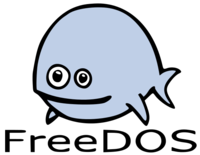Blinky ist weder Fisch noch Wal und das etwas komisch guckende Maskottchen von FreeDOS.
© FreeDOS Project (CC-BY-2.5) © FreeDOS Project (CC-BY-2.5)
Im April 1994 erschien MS-DOS 6.22 und sollte die letzte eigenständige Version für PCs sein. Zu der Zeit war MS-DOS das dominierende Betriebssystem für Einzelplatzrechner. Noch im selben Jahr hatte Jim Hall, damals Physik-Student an der Universität von Wisconsin, heute IT-Direktor an der Universität von Minnesota Morris, FreeDOS [4] ins Leben gerufen, das heute aktiv, wenn auch langsam, als eine freie und kompatible Alternative zu MS-DOS entwickelt wird. FreeDOS hat den Anspruch, zeitgemäße Erweiterungen und Anpassungen an DOS vorzunehmen und dabei trotzdem mit MS-DOS kompatibel zu bleiben, was mit der finalen Version FreeDOS 1.0 am 3. September 2006 erreicht wurde. Im Interview „DOS is (long) dead, long live FreeDOS“ bei Computerworld.com.au [5] erzählt Hall mehr über seine Beweggründe. Zu der Zeit war das Betriebssystem seiner Wahl MS-DOS. Zukünftig von Microsoft Richtung Windows gezwungen zu werden, wollte er nicht. Seit 1993 hatte er bereits eine Version von GNU/Linux installiert und war von den GNU-Programmen begeistert. Außerdem fand er die Idee gut, dass es eine freie Unix-Version gibt, weshalb er sich fragte: Wenn es eine Gruppe von Entwicklern schafft, etwas Komplexes wie Unix nachzuprogrammieren, indem sie einfach über das Internet zusammenarbeiten, warum sollte das nicht mit einem vergleichsweise simplen Betriebssystem wie MS-DOS funktionieren?
… und wer es heute noch nutzt
Auch 20 Jahre nachdem Microsoft bekannt gab, dass der Vertrieb und die Produktunterstützung für MS-DOS eingestellt werden würden, wird DOS noch aktiv genutzt. Und das nicht nur in belgischen Wahlmaschinen [6]. Auch eine Reihe von Science-Fiction- und Fantasy-Autoren haben das Schreiben einmal auf einer DOS-Maschine mit WordStar begonnen und halten bis heute daran fest. Darunter sind bekannte Namen wie Arthur C. Clark oder George R.R. Martin. Autor Robert J. Sawyer unterhält sogar eine Fan-Seite zu WordStar [7] . In der Regel wird DOS heute aber eher für zeitkritische Anwendungen oder für Anwendungen im Embedded-Bereich, die direkten Zugriff auf die Hardware erfordern, eingesetzt. Microsoft selbst bietet MS-DOS noch für Embedded Systeme an [8] und andere Hersteller wie Datalight ihr eigenes angepasstes ROM-DOS [9].Wie DOS funktioniert
Jedes DOS besteht im Prinzip nur aus dem Kernel, der bei FreeDOS KERNEL.SYS heißt und 1995 von Pasquale „Pat“ Villani [10] zum Projekt beigetragen wurde, einer Nutzerschnittstelle, bei DOS die COMMAND.COM und Befehlen zur Verwaltung des Dateisystems, also zum Formatieren, Kopieren etc. Mit dieser schmalen Konfiguration kann man es sogar von Diskette booten. Was man als Nutzer auf einem DOS-Rechner nach dem Start sieht, ist die Ausgabe der COMMAND.COM [11]. Unter FreeDOS wird der Kommandozeileninterpreter auch entsprechend FreeCOM [12] genannt. Die COMMAND.COM ist nicht Teil des Kernels und wird über die System-Konfigurationsdatei CONFIG.SYS [13] gestartet, die vom Kernel abgearbeitet wird. Die COMMAND.COM wiederum führt bei ihrem ersten Aufruf die AUTOEXEC.BAT [14] aus, die letzte Startdatei eines gewöhnlichen DOS-Systems. Wobei der FreeDOS-Kernel zuerst nachschaut, ob die Datei FDCONFIG.SYS existiert. Falls es sie gibt, lädt er sie zuerst, anstelle der CONFIG.SYS. Dadurch kann der FreeDOS-Kernel neben einem anderen DOS-Kernel auf der Festplatte existieren und trotzdem mit einer anderen Konfiguration starten [15]. FreeDOS akzeptiert auch einen anderen Namen anstelle der AUTOEXEC.BAT, wenn man die CONFIG.SYS entsprechend anpasst [16]. Es wird dann häufig der Dateiname FDAUTO.BAT verwendet, aber es kann auch ein beliebig anderer gewählt werden. Eine COMMAND.COM existiert auch in den auf DOS aufbauenden Windows-Systemen wie Windows 95, 98 oder ME. Es gibt sie aber auch unter Windows NT bis einschließlich Windows 7, zumindest in der 32-bit-Version, um 16-bit-DOS-Programme ausführen zu können. Auf einem 64-bit-Windows funktioniert das nicht. Da die COMMAND.COM nicht Teil des Kernels ist, kann man sie unter einem anderen DOS, aber auch unter Windows XP oder der 32-bit-Version von Windows 7 gegen die FreeCOM austauschen, und man hat die Befehlszeile aus dem FreeDOS-Projekt. Der Austausch funktioniert auch auf dem Nokia 9000 und seinem Nachfolger, dem 9110, da beide das vom PC kommende DOS-basierte Betriebssystem PEN/GEOS nutzen [17]. Dadurch sind die beiden Telefone fast vollständige IBM-PCs im Hosentaschenformat [18]. Durch die 16-Bit-Architektur des Kernels, den geringen Speicherverbrauch und den kleinen Umfang läuft FreeDOS auf modernen, aber auch auf älteren PCs wie dem 8086-Rechner, auf denen Linux wegen seiner Beschränkung auf i386-Hardware scheitert. Dadurch wird FreeDOS zu einer freien Alternative auf solchen Rechnern. Trotz der 16-Bit-Architektur des Kernels können unter FreeDOS aber auch 32-Bit-Programme laufen. Mit dem HX-DOS-Extender [19] kann man sogar Win-32-PE-Programme [20] aufrufen, die ursprünglich nur für Windows geschrieben wurden. Das PE steht für Portable Executable und ist das Dateiformat, das bei Win32- und Win64-Systemen für ausführbare Dateien verwendet wird.![[18]](http://a.fsdn.com/con/app/proj/freedos/screenshots/10049.jpg){kind=link}
Softwaregeschichte bewahren
Mit der Informatik, besonders mit der Softwaretechnik, ist es Menschen gelungen, Mittel und Methoden zur Formalisierung und Automatisierung geistiger Tätigkeiten zu erzeugen. Diese Artefakte, also Programme, die in der DOS-Ära Handlungssysteme ersetzt oder modifiziert haben, können durch FreeDOS weiter verwendet werden. So trägt FreeDOS zum Erhalt eines technischen Teils der Menschheitsgeschichte bei, indem es dafür sorgt, dass Hard- oder Software, die mit einem modernen Betriebssystem nicht mehr funktioniert, immer noch lauffähig ist. Das ist ein Gedanke, der sich auch in Bryan Lundukes Artikel „Why we should preserve useless, old software“ wiederfindet [21]. Wobei man noch die Frage klären müsste, ob alte Software wirklich nutzlos ist, wenn man sich überlegt, wie viele Daten noch in proprietären Datenformaten oder auf nicht mehr unterstützten Datenträgern gespeichert sind, bei denen die Firma, die diese Formate oder Produkte entwickelt hat, nicht mehr existiert oder die Weiterentwicklung aufgekündigt hat. Programme, welche diese Formate noch lesen können, werden deshalb nicht mehr auf modernere Systeme portiert. Oder wenn diese Daten auf Datenträger gespeichert sind, werden diese von neuerer Hardware nicht mehr unterstützt, weil es die passenden Schnittstelle nicht mehr gibt. Wie Lunduke weiter ausführt, ist dabei zweitrangig, ob es neuere oder andere, bessere Versionen der Software für aktuelle Betriebssysteme gibt. Denn nicht sehen zu können, wie dieses alte Stück Software lief, wie sie konzipiert war und wie man sie bedient hat, würde die Welt um ein Stück Softwaregeschichte bringen. Niemand würde heute VisiCalc [22], das erste Tabellenkalkulationsprogramm für PCs, noch wirklich benötigen. Aber sehen zu können, wie es einmal funktioniert hat, hält die Geschichte am Leben. Der Punkt, den Lunduke damit trifft, wird greifbar, wenn er darauf eingeht, dass Spielefirmen den Quellcode ihrer Spieleklassiker wie Wolfenstein 3D, Doom oder Quake veröffentlichen. Denn er zeigt damit auf die Universalität von Software. Unsere Nachfahren werden die Möglichkeit haben, die Spiele zu sehen und zu spielen, die das Genre ihres dann aktuellen besonderen einzelnen Spiels einst definiert haben. Das lässt sich genauso auf andere Software übertragen. Dazu passt auch, das Microsoft den Quellcode von MS-DOS 1.1 und 2.0 unter der „Microsoft Research License Agreement“ veröffentlicht hat [23]. Dies ist sicherlich ein interessanter Beitrag zur Softwaregeschichte für die Forschung, MS-DOS wird dadurch aber nicht zur freien Software. Hall hat auf der FreeDOS Homepage deshalb eine Warnung veröffentlicht, dass man nichts von dem MS-DOS-Quellcode für FreeDOS verwenden dürfe, da sich die Lizenz von Microsoft und die GPL 2.0 gegenseitig ausschließen [24].Wer nutzt FreeDOS?
Mit FreeDOS kann man einen alten IBM PC noch als Web- [25] oder FTP-Server weiter benutzen oder man macht daraus einen Musik-Player. Manche nutzen ihn auch als Desktop-PC, um Tabellenkalkulations- und Datenbankprogramme aus einer vergangenen DOS-Ära weiter zu nutzen. Man kann FreeDOS auch unter GNU/Linux finden, wenn man DOSEmu [26] installiert. DOSEmu hat im Gegensatz zum x86-Emulator DOSBox [27] den Vorteil, dass man mit der mittleren Maustaste Text über die Zwischenablage zwischen Desktop und DOS-Programm austauschen kann. 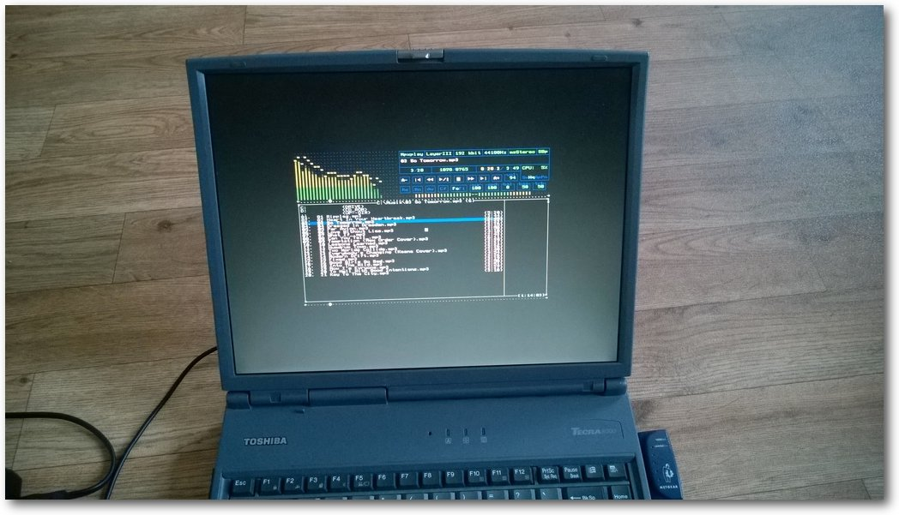Anstatt den alten Rechner verstauben zu lassen, kann man ihn noch prima als JukeBox benutzen.
Durch den geringen Umfang von FreeDOS kann man es auch gut für Unterrichtszwecke nehmen, um die Grundlagen von Betriebssystemen zu zeigen. Mit FreeDOS kann man sehr nahe an der Hardware des Computers arbeiten, was moderne Betriebssysteme häufig aus Sicherheits- und Stabilitätsgründen unterbinden. Für die Version 2.0 von FreeDOS hatte Jim Hall große Pläne [28]. Er überlegte, wie weit DOS heute sein könnte, wenn Microsoft damals nicht die Unterstützung aufgekündigt hätte. Hätte es dann heute Multitasking und eine eigene grafische Oberfläche? Wäre es eine Alternative zu schlanken Linux-Systemen, die sich Menschen als Desktop aussuchen würden? Im Jahr 2012 wollte er daher wissen, wer neben den DOS-Fans, die sich darüber freuen, veraltete Rechner oder Programme zum Laufen zu bekommen oder klassische DOS-Games zu spielen, DOS noch benutzt und warum. Das Ergebnis der Umfrage war für Hall und seine FreeDOS 2.0-Pläne ernüchternd. FreeDOS wird hauptsächlich eingesetzt, um veraltete BUS-Steckplätze mit ihrer Software weiter betreiben oder um es auf Embedded Systemen benutzen zu können. Es lässt sich sehr stark an die gegebene Hardware anpassen, was es interessant für einige Bereiche in der Industrie macht, wo selbstgeschriebene Programme serielle oder andere spezielle Schnittstellen ansteuern. Dabei ist FreeDOS, wie schon weiter oben geschrieben, nicht das einzige DOS auf dem Markt der Embedded-Systeme. Viele DOS-Entwickler tragen Quellcode zum FreeDOS-Projekt bei, der speziell auf den Embedded-Bereich abzielt. Man kann als Hobby-Bastler FreeDOS auf einem 86Duino [29] in Aktion sehen. Die auf Arduino basierende Embedded-Plattform besitzt einen Vortex86EX SoC, der von vielen x86-kompatiblen Betriebssystemen unterstützt wird, also auch von DOS. Damit läuft das Betriebssystem wieder auf trendiger Hardware. Das Systemimage selbst, das von 86duino.com angeboten wird, basiert auf FreeDOS [30], das gegenüber anderen DOS-Systemen ein paar technische Vorteile bietet, wie Logical Block Addressing (LBA), das den Zugriff auf Datenträger bis zu 2 TB erlaubt. Außerdem werden Partitionen mit FAT32-Dateisystem unterstützt und man kann sogar von ihnen booten. Der DOSLFN-Treiber gestattet die Verwendung langer Dateinamen und durch den Ultra-DMA-Treiber werden schnelle Zugriffe auf IDE-Datenträger möglich. Was fehlt ist eine Unterstützung für NTFS, die auch nicht geplant ist. Es gibt aber Shareware-Treiber, die diese Lücke stopfen. Eine Lücke, die schwieriger zu schließen ist, ist die Unterstützung für Netzwerk und Internet. Selbst wenn man es schafft, mit FreeDOS ins Internet zu kommen, gibt es keinen Webbrowser, der aktuelle Webstandards wie CSS und JavaScript beherrscht. Als DOS entwickelt wurde, gab es noch kein TCP und kaum Netzwerke, weshalb es vom Design her auch kein netzwerkorientiertes, multitaskingfähiges, Mehrbenutzer-Betriebssystem ist, wie Eric Auer im Artikel „Though ‚barely an operating system,‘ DOS still matters (to some people)“ auf arstechnica.com sagt [28]. Diese Funktionen sind erst nach und nach dazu gekommen, was man FreeDOS heute noch anmerkt. Wenn Netzwerktreiber für DOS existieren, sind sie häufig proprietär und können nicht so einfach verwendet werden. Es ist auch nicht damit zu rechnen, dass sich die Situation für FreeDOS in nächster Zeit ändern wird. Das Fehlen von Netzwerkkomponenten muss man aber auch nicht als Problem sehen, es kann auch ein Feature sein. FreeDOS-Rechner können kaum aus der Ferne gehackt werden. Für Spionageprogramme und ähnliche bösartige Malware ist es schwieriger, nach Hause zu telefonieren. Trotzdem wäre eine Netzwerkunterstützung wünschenswert, sollte FreeDOS in naher Zukunft auf ARM-Prozessoren portiert werden. Das ist zumindest eine Idee, wenn das Problem mit dem fehlenden BIOS bei ARM gelöst ist. Denn FreeDOS setzt wie jedes andere DOS auch voraus, dass ein BIOS vorhanden ist. Eine andere Möglichkeit wäre, FreeDOS in einem Container mit Linux-Umgebung laufen zu lassen, oder ein kleines Linux, das DOSEmu startet. Das Linux wäre sogar in der Lage, mehrere Prozesse mit DOSEmu auszuführen, was FreeDOS so etwas wie den Anschein von Multitasking verleihen würde, wie Hall in dem Artikel bei Arstechnica.com weiter ausführt. Da bei DOSEMU der Prozessor aber nicht emuliert wird, sondern die DOS-Programme auf dem wirklichen Prozessor des PCs ablaufen, wird dieser Plan schwierig auf einer ARM-basierten Plattform umzusetzen sein. DOSBox emuliert auch die Hardware, weswegen es auf dem Raspberry PI und auch unter Android über den Playstore installiert werden kann. Im Gegensatz zu DOSEmu ist es aber sehr langsam. 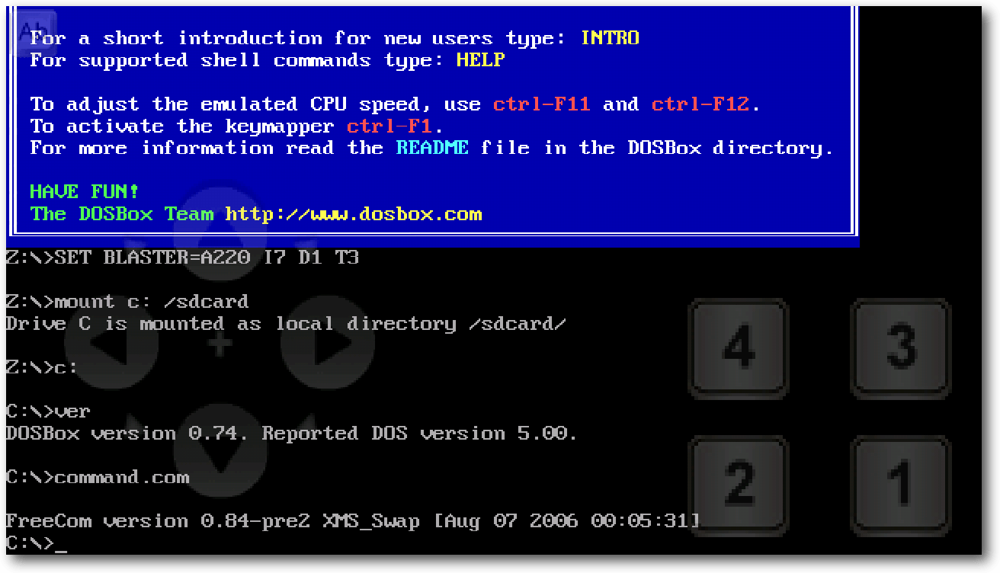
Kopiert man die FreeCOM auf seinen Androiden, kann man FreeDOS in einer App wie aDOSBox benutzen.
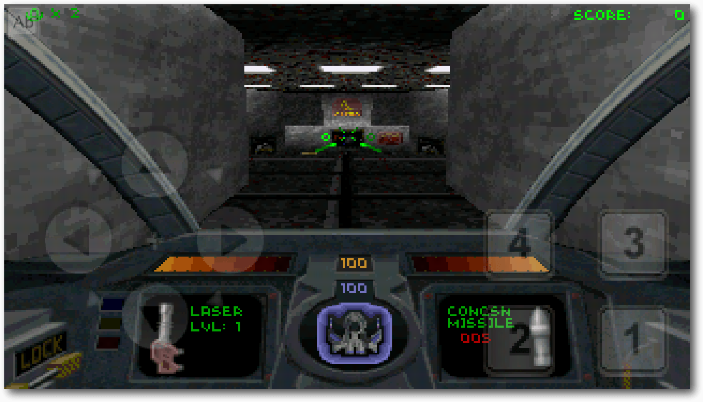
Die Steuerung ist ganz schön hakelig, aber man kann mit aDOSBox auch Descent auf dem Androiden spielen.
Ein weiterer PC-Emulator für den Raspberry PI ist rpix86 [31]. Er emuliert das etwas abwegige 4DOS [32], das unter einer MIT-Lizenz steht, selbst aber leider nicht Open Source ist.
Die Zukunft von FreeDOS
FreeDOS wird gerne genommen, z. B. von DELL, um Komplettsysteme nicht ohne Betriebssystem ausliefern zu müssen. Es läuft eben auch gut auf modernen Laptops, in der Regel wird es aber nach dem Kauf durch ein anderes Betriebssystem ersetzt. Trotzdem findet FreeDOS seinen Weg auf alte PCs und moderne Embedded-Systeme. Der Plan für FreeDOS 2.0 ist deshalb, eine modernere Version des heutigen FreeDOS 1.0 bzw. 1.1 zu werden [33]. FreeDOS 3.0 oder eine spätere Version soll multitaskingfähig werden und eine erweiterte Treiberunterstützung mitbringen, besonders bei den Netzwerktreibern. Trotzdem soll das Wesentliche von DOS erhalten bleiben, indem es weiter ein Einbenutzersystem für die Kommandozeile bleiben wird. Alle Programme, die jemals für MS-DOS geschrieben wurden, sollen auch noch auf FreeDOS 3.0 oder späteren Versionen lauffähig sein. Zusätzlich sollen weitere GNU-Werkzeuge hinzukommen. Dadurch können sich Entwickler, die von Unix oder GNU/Linux kommen, vielleicht etwas besser unter FreeDOS zurechtfinden. Außer extremen Puristen würde heute vermutlich niemand hauptsächlich mit FreeDOS arbeiten wollen, um Dokumente zu schreiben, Tabellen zu erstellen oder E-Mails zu bearbeiten. Dafür ist FreeDOS auch nicht gedacht. FreeDOS soll kein Paralleluniversum sein, in dem Microsoft Windows nie erfunden und weiter auf MS-DOS gesetzt hat. FreeDOS hat aber genug Anhänger, vom Spieler klassischer Spiele über den Programmierer für veraltete Schnittstellen und Hardware, bis zum Elektroingenieur, der sich mit Embedded-Plattformen beschäftigt, um eine Nische auszufüllen. Anstatt die Steuerung der Fräse in der Holzwerkstatt oder das Kassensystem auszutauschen, kann man sich im Unternehmens- oder privatem Bereich den Upgrade-Stress sparen und diese Systeme mit FreeDOS weiter betreiben. Genau in diesem Bereich hat FreeDOS eine Zukunft, um dorthin zu gehen, wo noch kein DOS zuvor gewesen ist. Links[1] https://de.wikipedia.org/wiki/Disk_Operating_System
[2] http://www.mail-archive.com/freedos-user@lists.sourceforge.net/msg15073.html
[3] https://de.wikipedia.org/wiki/MS-DOS
[4] http://www.freedos.org/
[5] http://www.computerworld.com.au/article/452826/developer_interview_dos_long_dead_long_live_freedos/?pp=2
[6] http://beta.slashdot.org/story/202533
[7] http://www.sfwriter.com/wordstar.htm
[8] http://avnetmssolutions.com/products/14/title/MS-DOS+for+Embedded+Systems
[9] http://www.datalight.com/products/rom-dos
[10] https://en.wikipedia.org/wiki/Pat_Villani
[11] https://de.wikipedia.org/wiki/COMMAND.COM
[12] http://www.freedos.org/freecom/
[13] https://de.wikipedia.org/wiki/CONFIG.SYS
[14] https://de.wikipedia.org/wiki/AUTOEXEC.BAT
[15] http://www.freedos.org/kernel/config.txt
[16] http://help.fdos.org/de/hhstndrd/batch/autoexec.htm
[17] http://www.conradscastle.co.uk/9k/dos.htm
[18] http://a.fsdn.com/con/app/proj/freedos/screenshots/10049.jpg
[19] https://de.wikipedia.org/wiki/HX_DOS_Extender
[20] https://de.wikipedia.org/wiki/Portable_Executable
[21] http://www.networkworld.com/article/2226809/opensource-subnethy-we-should-preserve-useless--ol/opensource-subnet/why-we-should-preserve-useless--old-software.html
[22] https://de.wikipedia.org/wiki/VisiCalc
[23] http://www.heise.de/newsticker/meldung/Quelltexte-von-MS-DOS-und-Word-for-Windows-veroeffentlicht-2154723.html
[24] http://sourceforge.net/p/freedos/news/2014/03/microsoft-releases-source-code-to-ms-dos/
[25] http://www.mail-archive.com/freedos-user@lists.sourceforge.net/msg14900.html
[26] http://dosemu.sourceforge.net/
[27] http://www.dosbox.com/
[28] http://arstechnica.com/information-technology/2014/07/it-may-be-barely-an-operating-system-but-dos-still-matters-to-some-people/
[29] http://www.86duino.com/
[30] http://www.86duino.com/index.php?p=3203
[31] http://rpix86.patrickaalto.com/
[32] https://de.wikipedia.org/wiki/4DOS
[33] http://www.freedos.org/wiki/index.php/FreeDOS_Road_Map
| Autoreninformation |
| Christian Imhorst (Webseite) nutzte DOS, genauer MS-DOS, als erstes Betriebssystem auf seinem ersten Rechner. Gerätetreiber in den hohen Speicherbereich zu laden war ein großer Spaß, besonders wenn danach „Star Wars: X-Wing“ endlich lief. |
Beitrag teilen Beitrag kommentierenZum Index
Rezension: Git – kurz & gut
von Sujeevan Vijayakumaran Das Buch „Git – kurz & gut“ vom Autor Sven Riedel ist ein kompaktes Taschenbuch, welches in die Nutzung von Git einleitet. Es richtet sich vor allem an Umsteiger von Nutzern anderer Versionsverwaltungsprogrammen. Redaktioneller Hinweis: Wir danken O'Reilly für die Bereitstellung eines Rezensionsexemplares.Was steht drin?
Das Buch umfasst neun Kapitel, abgedruckt auf 192 Seiten. Daneben enthält das Buch noch fünf Anhänge. Das erste Kapitel ist die Einleitung. In diesem Teil wird zunächst geklärt, was Bestandteil des Buches ist und wie die Konventionen sind. Im zweiten Kapitel folgt anschließend der direkte Einstieg in Git. Dort werden auf wenigen Seiten Konzepte von Git erklärt, etwa der Arbeitsbaum, der Index und was Commits, Branches, Refs und Tags sind. Weiterhin wird kurz das Thema der Remote-Repositories angeschnitten. Das dritte Kapitel beinhaltet die Installation von Git. Dabei wird nicht nur die Installation von Binär-Paketen beschrieben, sondern auch die Kompilierung aus dem Source-Code. Während die ersten drei Kapitel eher einleitende Kapitel waren, geht es dann in Kapitel 4 richtig los. In diesem Kapitel wird zu Beginn ein erstes Repository angelegt, dieses wird anschließend konfiguriert und einige Funktionen von Git erläutert. Darunter fallen zunächst einmal die Versionierungsbefehle. Konkret handelt es sich hierbei um das Hinzufügen von Dateien in den Index, das Erstellen und das Rebasen von den ersten Commits. Weiterhin wird auch noch der Stash, das Mergen und die Nutzung von Remote-Repositories beschrieben. Das fünfte Kapitel behandelt Tipps und Tricks. Dies sind tiefergreifende Funktionen von Git, die man im tagtäglichen Leben wohl eher seltener braucht. Darunter fallen etwa das Rückgängigmachen von Merges, das Rückgängigmachen von gelöschten Branches oder auch die Nutzung von eigenen Git Aliases. Im nachfolgenden sechsten Kapitel wird recht kurz ein Einblick in ein mögliches Branching-Modell – und wie man es mit Git umsetzt – gegeben. Die letzten drei Kapitel des Buchs sind eher ergänzende Kapitel. Zunächst geht es hier um die Nutzung von Github, wobei ganz bewusst nur die oberflächlichen Funktionen von Github erläutert werden, da sich dort regelmäßig etwas ändert. GUI-Clients von Git wurden bis zu Kapitel 8 noch nicht behandelt, was an dieser Stelle dann nachgeholt wird. Das Buch schließt mit dem 9. Kapitel ab, in dem die Installation und Konfiguration eines Git-Clients mit einem Subversion-Server vermittelt wird. Der fünfteilige Anhang enthält weitere Informationen, etwa Vergleiche zwischen Git und Subversion-Befehlen, Git-Log-Formatierungen, Formate von Commit-Namen sowie einen Ausblick auf Git 2.0.Wie liest es sich?
Das Buch ist nicht nur ein Taschenbuch, sondern auch eine Referenz. Diesen Fakt merkt man dem Buch auch an, da die Erläuterungen meistens recht kurz gehalten und daher meistens auch nicht sonderlich detailreich sind. Es sind prinzipiell zwar keine Kenntnisse in der Nutzung von anderen Versionsverwaltungsprogrammen notwendig, doch könnten Kenntnisse für dieses Buch schon von Vorteil sein. Es werden häufiger Vergleiche zu Subversion gezogen und im selben Schritt erläutert, welche ähnlich lautende Befehle jeweils andere Auswirkungen in Git haben. Screenshots, Bilder oder Diagramme sind recht spärlich vorhanden. Manchmal wäre das ein oder andere zusätzliche Diagramm nützlich, um die Arbeit von und mit Git besser veranschaulichen zu können. Dies wäre vorteilhaft, da der Leser dann im Idealfall schneller versteht. Es sind zwar Abbildungen vorhanden, die Anzahl ist allerdings relativ überschaubar.Kritik
Dieses Buch richtet sich eher an Subversion-Umsteiger statt an komplette Neulinge.| Buchinformationen | |
| Titel | Git – kurz & gut [1] |
| Autor | Sven Riedel |
| Verlag | O'Reilly |
| Umfang | 192 Seiten |
| ISBN | 978-3-95561-734-9 |
| Preis | 12,90 € (broschiert), 9,90 € (E-Book) |
Diese Information steht zwar in der Einleitung, jedoch nicht auf der Zusammenfassung auf der Rückseite des Buches. Leser, die noch keinerlei Erfahrung mit Versionsverwaltungsprogrammen haben, könnten Schwierigkeiten mit diesen Buch haben. Die übrigen Leser mit Erfahrung sollten hingegen keinerlei Probleme haben. Dieses Taschenbuch ist kompakt gehalten, was sich stellenweise am Inhalt auswirkt, da die Erläuterungen somit ebenfalls ziemlich kurz sind. Grundsätzlich ist das Buch daher wirklich nur für Umsteiger aus anderen Versionsverwaltungsprogrammen oder für Sachkundige zu empfehlen, welche ein kleines, günstiges Buch zum Nachschlagen brauchen. Redaktioneller Hinweis: Da es schade wäre, wenn das Buch bei Sujeevan Vijayakumaran im Regal verstaubt, wird es verlost. Die Gewinnfrage lautet: „Wer ist der Erfinder von Git?“ Die Antwort kann bis zum 09. November 2014, 23:59 Uhr über die Kommentarfunktion oder per E-Mail an
[1] http://www.oreilly.de/catalog/gittb2ger/
| Autoreninformation |
| Sujeevan Vijayakumaran (Webseite) nutzt Git seit einigen Jahren nicht nur zur Software-Entwicklung, sondern auch für die Versionierung von Texten, wie etwa dieser Rezension. |
Beitrag teilen Beitrag kommentierenZum Index
Rezension: Linux-Server mit Debian 7 GNU/Linux
von Dominik Honnef Lektüre zu Themen wie „Linux-Server“ liest sich immer etwas merkwürdig, da oft nur ein kleiner Teil wirklich Linux behandelt, während der Rest sich mit Themen wie Apache, MySQL, Samba, FTP, E-Mail, und aller möglicher anderer Software beschäftigt. Natürlich läuft diese Software auf Linux, oftmals läuft sie aber ebenso auf diversen BSDs und auch Windows. Dennoch ist es genau diese Software, und nicht Linux selbst, an die man denkt, wenn von Linux-Servern die Rede ist. Berühmt ist z. B. die Kombination Linux, Apache, MySQL und PHP (LAMP), und das obwohl sie schon lange nicht mehr aktuell ist. Datensammler kennen ggf. die Kombination Linux und FTP oder Samba. Und dann gibt es natürlich noch „Mailserver“, wie z. B. Postfix. Redaktioneller Hinweis: Wir danken dem mitp-Verlag für die Bereitstellung eines Rezensionsexemplares. Womit genau soll sich ein Buch dann beschäftigen, wenn das Thema so weitgefasst ist und verschieden verstanden wird? Am besten mit allem, und das ist genau, was dieses Buch tut. Während knapp die Hälfte des Buches populäre Serverdienste wie Apache, MySQL, Samba, DHCP, DNS, E-Mail und Proxys behandelt, widmet sich die andere Hälfte sowohl zur Hälfte grundlegenden Linuxthemen, die etwa auch für Desktopanwender relevant sind, und zur Hälfte serverspezifischen Themen wie automatischen Backups, der Analyse von Logdateien, SSH, iptables und abschließend Intrusion Detection.Die Zielgruppe
Bei der anfangs erwähnten Zusammenstellung von Themen und der Tatsache, dass sich 25% den Grundlagen von Linux widmen, sollte es klar sein, dass sich das Buch an Anfänger richtet – konkret an Anfänger, die keine Erfahrung mit Linux haben. So wird auf den ersten 70 Seiten erklärt, wie man Debian aus dem Internet herunterlädt, auf eine CD brennt und installiert – die nächsten 200 Seiten erklären apt und dpkg, das Dateisystem und diverse andere Linux-Grundlagen. Erst nach gut 300 Seiten fängt das Buch an, wirklich auf serverrelevante Themen einzugehen. Wer also schon Erfahrung mit Linux hat und nun in die Welt der Server einsteigen will, der bezahlt hier für fast 400 Seiten, die er nicht zu lesen braucht.Der Stil
Eric Amberg, der Autor des Buches, bietet seit mehreren Jahren Consulting und Seminare an, und dies spiegelt sich im Buch wider. Zum einen ist das Buch in einem sehr lockeren Stil geschrieben – es ist sehr lesernah, es werden des öfteren Smileys verwendet, und auch der eine oder andere Scherz lässt sich finden. Dennoch wird der Leser gesiezt, und das ist auch gut so. Der lockere Stil mag dem einen oder anderen schon zu persönlich sein, das Du hätte vermutlich den Rahmen gesprengt.Der Umfang
Dem potentiellen Käufer des Buches muss klar sein, dass er keine tiefgehenden Diskussionen finden wird. Themen wie z. B. Vorteile/Nachteile von Software-RAID gegenüber Hardware-RAID werden nicht sinnvoll behandelt, und auch die kurze Abspeisung (in etwa: „Hardware-RAID ist immer besser“) ist weder hilfreich noch korrekt. Außerdem werden die Entscheidungen von Debian nicht hinterfragt. Debian benutzt SysVinit, also muss das reichen. Systemd wird zwar kurz erwähnt, aber die Unterschiede werden nicht ausführlich behandelt – nicht einmal auf Supervision, ein notwendiges Thema für Server, wird eingegangen. Zu GRUB 2 wird zwar gesagt, dass es komplex ist, Alternativen werden aber nicht erwähnt. Es ist ebenfalls schade, dass es ein ganzes Kapitel zu X11 gibt, was auf Servern nichts verloren hat, aber weder SELinux noch AppArmor erwähnt werden – wichtige Werkzeuge im fortgeschrittenen Umgang mit Servern. Man kann argumentieren, dass dies zur Zielsetzung und Zielgruppe des Buches passt, nämlich die notwendigen Grundlagen an Einsteiger zu vermitteln. Es soll nicht erklärt werden, wie man sein System bis ins kleinste Detail anpassen kann oder welche Details es gibt. Der gestandene Admin, der sich vorhin noch über die „nur 1000 Seiten“ wunderte, wird nun auch verstehen, wie das geht: Wenn man mit dem Buch fertig ist, wird man zwar aller Wahrscheinlichkeit nach einen funktionierenden Server haben, der für das private oder kleinbetriebliche Umfeld adäquat funktioniert, aber man wird noch lange nicht am Ende seiner Reise sein: Es werden noch viele Jahre an Erfahrung und mehr Lektüre vonnöten sein, um für alle Probleme gewappnet zu sein. Das heißt natürlich nicht, dass das Buch schlecht ist. Im Gegenteil, es tut das, was es tut, sehr überzeugend. Man muss sich nur bewusst sein, welche Ziele sich der Autor gesetzt hat und man muss sich fragen, ob man zur Zielgruppe gehört.Qualität
Es konnten keine größeren inhaltlichen Fehler festgestellt werden, was bei der Fülle an Themen recht beeindruckend ist. Der Autor scheint die Materie zu verstehen und sich mit der Software, die er erklärt, auszukennen. Dies ist bei Büchern dieses Umfangs leider nicht selbstverständlich. Einzig beim Thema Open Source tut sich der Autor etwas schwer und verwechselt Open Source mit der GPL. Es wird behauptet, dass alle Software in den Debian-Repositorys der GPL unterliegen muss, „im Gegensatz zu vielen anderen Distributionen“. Dies ist so natürlich nur halb richtig: Zwar erlaubt Debian keine unfreie Software, aber es gibt mehr freie Lizenzen als die GPL, und Debian hat eine Liste von erlaubten Lizenzen [1]. Für die meisten Leser dieses Buches wird dieser Fehler keine große Bedeutung haben, rechtlich gesehen ist er jedoch nennenswert. Das Buch als Druckerzeugnis weist einige kleine Mängel auf, die zwar nicht die Qualität des Inhalts nennenswert beeinflussen, bei einem Buch in dieser Preisklasse aber dennoch störend auffallen. Das Papier ist etwas zu dünn für den beidseitigen Druck, was vor allem bei Bildern mit großen schwarzen Flächen auffällt, in denen sich der Text auf der anderen Seite schnell verliert. Der Textsatz, der weitgehend gut ist, weist an manchen Stellen sehr ungeschickte Macken auf, etwa einen Zeilenumbruch zwischen dem Minus-Zeichen und dem Buchstaben einer Option (-f). Und um das pingelige Gemecker abzurunden kann man anmerken, dass dem Buch ein Leseband fehlt. Positiv anmerken muss man definitiv, dass sich trotz des Umfangs von fast 1000 Seiten nahezu keine Typos oder Druckfehler finden lassen. Hier hat das Lektorat sehr gute Arbeit geleistet.Fazit
Das Buch überzeugt in dem, was es tut: Anfängern ohne Erfahrung mit Linux oder Servern einen Einstieg zu ermöglichen, so dass sie hinterher kleine Server administrieren können. Das Buch ist weniger geeignet für Leute mit tiefgehenden Linuxkenntnissen und langweilig für jeden Administrator. Wer einen Blick in das Inhaltsverzeichnis [2] wirft und meint, dass er zu dem Großteil der Themen etwas lesen möchte, für den ist das Buch empfehlenswert: Es ist von inhaltlich hoher Qualität und es vermittelt die Themen fach- und zielgruppengerecht.| Buchinformationen | |
| Titel | Linux-Server mit Debian 7 GNU/Linux – Das umfassende Praxis-Handbuch [3] |
| Autor | Eric Amberg |
| Verlag | mitp |
| Umfang | 970 Seiten |
| ISBN | 978-3-8266-8200-1 |
| Preis | 49,99 € |
Links
[1] https://wiki.debian.org/DFSGLicenses
[2] http://www.it-fachportal.de/media/vmi-buch/texte/inhaltsverzeichnis/9783826682001_inhaltsverzeichnis_03.pdf
[3] http://www.it-fachportal.de/shop/buch/Linux-Server mit Debian 7 GNU/Linux/detail.html,b190829
| Autoreninformation |
| Dominik Honnef (Webseite) ist langjähriger Linuxanwender und Programmierer und bei Fachliteratur zu komplexen Themen wie Linux immer skeptisch. |
Beitrag teilen Beitrag kommentierenZum Index
Rezension: Django Essentials
von Jochen Schnelle Django [1] ist unter den Python „full featured“ Webframeworks eindeutig der Platzhirsch und erfreut sich entsprechender Beliebtheit. Trotz der Popularität gibt es vergleichsweise wenige aktuelle Bücher zu diesem Thema. Das vorliegende Buch „Django Essentials“ gehört aber zu den neuesten Veröffentlichungen über Django. Erklärte Zielgruppe des Buches sind Python-Programmierer und Webentwickler, die einen Leitfaden für den ersten Kontakt mit Django suchen. Kenntnisse in Python werden aber beim Leser vorausgesetzt.Inhalt
Inhaltlich wandelt der Autor – wenig verwunderlich – auf den gleichen Pfaden wie andere Tutorials zum gleichen Thema. Als erstes wird die Installation von Django beschrieben, dann wird im Rahmen des Buchs eine kleine Beispielapplikation programmiert. Im Zuge dessen wird die Konfiguration des Frameworks erläutert, URLs für das Routing definiert, Templates und Views, welche für die Ausgaben von Daten verantwortlich sind, erklärt sowie die Datenmodelle in der Datenbank über Djangos ORM angelegt. Des Weiteren gibt es noch Kapitel zum Admin-Interface von Django, zur Authentifizierung mit den Bordmitteln des Frameworks sowie je ein kurzes Kapitel zur Nutzung von Django in Kombination mit jQuery sowie Tipps für das Deployment von Applikationen. Das Buch ist für Django 1.6 geschrieben, inzwischen ist das Webframework in der Version 1.7 erschienen. Für den Inhalt spielt dies aber keine Rolle, da alle Beispiele auch für die neuste Django-Version gültig sind.Verständlichkeit
Das Englisch des Buchs ist durchweg gut verständlich, das Lesen sollte auch mit Schulenglisch machbar sein. Der Autor pflegt einen sachlichen und kompakten Schreibstil. Alle Codebeispiele sind komplett im Buch abgedruckt und auch online verfügbar. Die Listings im Buch sind durchweg kommentiert und im Text erklärt, jedoch in den meisten Fällen, wie bereits gesagt, sehr kompakt. Zwar hat man nie das Gefühl, dass etwas fehlt, aber gerade Einsteiger werden sich hier wohl an der einen oder anderen Stelle mehr und ausführlichere Erläuterungen wünschen.Fazit
Das Buch bietet einen guten, kompakten Einstieg in die Erstellung einer ersten Applikation mit Django. Allerdings tut dies die kostenlose Django-Dokumentation auch, an vielen Stellen mit mehr Tiefgang. Von daher ist das Buch „Django Essentials“ sicherlich kein Ersatz für die Dokumentation, sondern eher eine ergänzende Alternative für diese. Vor dem Kauf des Buchs sollte man deshalb vielleicht erst einmal einen Blick in das Buch werfen und prüfen, ob es inhaltlich die Erwartungen erfüllen könnte.| Buchinformationen | |
| Titel | Django Essentials [2] |
| Autor | Samuel Dauzon |
| Verlag | Packt Publishing, 2014 |
| Umfang | 172 Seiten |
| ISBN | 978-1-78398-370-4 |
| Preis | ca. 16,99 € (Taschenbuch), ca. 9,35 € (E-Book) |
Links
[1] https://www.djangoproject.com/
[2] https://www.packtpub.com/web-development/getting-started-django
| Autoreninformation |
| Jochen Schnelle (Webseite) programmiert bevorzugt in Python und interessiert sich im Rahmen der Webentwicklung auch für Django. |
Beitrag teilen Beitrag kommentierenZum Index
Die dritte Katastrophe – Teil 1
von Stefan Wichmann Der Aufprall war hart. Ich spürte nur den kurzen Schmerz, als das Luftkissenauto mich überfuhr und ich unter die Dampfdüsen geriet. Ich hatte wohl keine andere Wahl als sofort tot zu sein. Mein Geist, meine Seele oder was auch immer – sagen wir einmal ‚mein Ich‘ – durchschwebte einen schwarzen Tunnel. An seinem Ende war es taghell, aber ehe ich darüber sinnieren konnte, ob und wie ich dort hin möchte oder hin muss, war ich schon da. Erschrocken starrte ich hinunter auf das Malheur. Es heißt ja, wenn man stirbt, verlässt die Seele den Körper und blickt auf diesen hinab. Nun, das konnte ich nicht. Ich wusste, dass ich nicht schwindelfrei bin und meine Hand tastete ins Leere, als ich irgendwo nach Halt suchte. Ich schaute mich um. Keiner da. Soweit ich mich an meinen Religionsunterricht erinnerte, sollten hier Leute stehen, die mich mal gekannt hatten und die mich in Empfang nähmen. Ich versuchte mich zu erinnern. An den Priester oder Pfarrer, an diese Person, die immer so heilig getan hatte und mir damals als Steppke den Glauben vermittelte. Na sagen wir mal lieber Furcht: „Tue dies nicht, tue das nicht, sonst passiert dieses und jenes …“ Irgendwann ignorierte ich das alles und hatte mir was wirklich Wichtiges, etwas Schönes gesucht: Linux! Jede freie Minute stürzte ich mich in die Untiefen des Betriebssystems. Ich liebte die Shellprogrammierung und die Sprache Perl. Insbesondere die Erweiterung TK hatte es mir angetan, sodass ich Oberflächen schuf und über Buttons oft benötigte Befehlssequenzen aufrief. Erneut schaute ich mich um. Hier musste doch irgendjemand sein! Nicht einmal ein einziger Avatar oder besser gesagt eine Seele oder ein Irgendetwas trieb sich an diesem Ort herum. Ein weiterer Tunnel zog mich magisch an. Ich konnte gar nichts dagegen tun. Ich sträubte mich, aber weder Hand noch Fuß fanden Halt. Woran sollte ich meinen Geist, meine Seele klammern? In meinem Kampf gegen diese mich anziehende Kraft erhaschte ich mehr aus Versehen als gewollt einen Blick auf meinen Körper … dort unten … in der alten Welt. Eigentlich sah ich nur das Luftkissenauto und dass der verzweifelte Fahrer in seiner Not die Düsen abstellte. Das Gefährt senkte sich ab und gab meinem Körper den Rest, als es aufsetzte. Der Trottel griff sich panisch an den Kopf … Dunkelheit – wieder mit Licht am Ende des schwarzen Tunnels. Was erwartete mich jetzt? Eigentlich hatte ich auf der Erde keine Kontakte mehr gehabt. Jedenfalls keine echten, lebenden. Für „Second Life“ konnte ich mich nie richtig erwärmen. Immerhin erschuf mir Facebook 433 Freunde. Die meisten davon kannte ich nicht einmal. Persönlich sowieso nicht. Es wurde wieder hell um mich herum. „Hallo?“ Ich sah mich um. „Hallo?“, rief ich zurück. Eine Frau kam mir zögernd entgegen. Weiß gekleidet. Weiß. Eine Katastrophe. Ich hasste diese Farbe, die ja nicht einmal eine echte Farbe ist. Trotzdem freute ich mich, endlich jemanden zu sehen. „Wer sind Sie?“ „Julia Vatar.“ Sie streckte mir die Hand hin und lächelte. „Und was machen sie hier?“ Sie sah sich um. „Weiß nicht. Als ordinierte Priesterin helfe ich Ihnen vielleicht?“ Priesterin. Religion. Noch eine Katastrophe. Ich schüttelte den Kopf. „Damit habe ich nichts am Hut. – Hatte ich nie“, bekräftigte ich. Sie legte den Kopf schief. „Das ist schade, ich hätte Dir die Schönheiten zeigen können.“ „Schönheiten?“ Das hörte sich schon besser an. Ich folgte ihr zu einer kleinen Erhöhung. Aber statt mir „Schönheiten“ zu zeigen, berichtete sie von ihrem Paradies: „Reine, würzige Luft. Natur, soweit das Auge reicht. Und jeder geht in der Gemeinschaft seiner Aufgabe nach, die ihn erfüllt!“, rief sie fröhlich. „Im Moment sind wir in einer Zwischenwelt, bis wir abgeholt werden.“ Kurz zögerte sie: „Oder wir werden auf die Erde zurückgeschickt, um unser Leben sinnvoll einzusetzen und uns endlich zu entwickeln.“ Zur Verdeutlichung schwang sie ihre Hand in einem leichten Bogen. „Natur. Reine Natur“, wiederholte ich. Nur Natur? Das sollte das Paradies sein? Nie wieder mit Linux arbeiten, den Tablet-PC rooten, gamen? „Mein eigentliches Lebensziel“, hörte ich sie zufrieden seufzen, „habe ich bald erreicht!“ Erneut versetzte es mir einen kleinen Stich ins Herz, als ich daran dachte, nie mehr, wirklich nie wieder ein Spiel wie Command & Conquer in einer WINE-Umgebung spielen zu können. „Mein Name ist Idolum“, erschreckte mich eine Stimme hinter uns. Julia musterte ihn. Ihre Augen leuchteten. „Kommen wir ins Paradies?“ Sie war sich ihrer Sache so sicher! Erstaunt wiegte Idolum den Kopf. Julia ließ sich nicht beirren: „Wir können uns dahin wünschen, wohin wir wollen? Wir können alles machen, was wir wollen?“, platzte es aus ihr heraus. „Wir, wir, wir“, murmelte Idolum. „Yep, das Paradies ist ein Schlaraffenland, aber nur dadurch, dass einer für den anderen da ist.“ Mir als Einzelgänger schwante Fürchterliches und ich entgegnete, „Ich dachte, dort fließen Milch und Honig!“ Idolum zog irritiert und fragend die Augenbrauen hoch. Ohne auf meine Bemerkung einzugehen, forderte er uns auf, mitzukommen. Julia eilte mit ausgebreiteten Armen voraus. Wir sahen ihr die Lebensfreude an. Sie genoss ihr neues Umfeld. Plötzlich verharrte sie. „Also es stimmt, wir können uns an andere Orte wünschen?“ „Yep, aber …“ Vor meinen Augen verschwand sie, nur ihre Fußabdrücke verblieben im sandigen Boden. „Idolum?“ Er legte seine kräftige Hand auf meine Schulter. „Ist sie immer so ungestüm?“ Ich zuckte die Schultern. „Wo ist sie hin?“ „Sie? Ins Paradies entwischt. Hat ihren Weg gefunden. Du aber“, er deutete mit einem dürren Finger auf mich, „Du kommst mit mir.“ Er führte mich zu einer schwarz gekleideten Gestalt. Sofort fielen mir die gruseligen Scheitelaugen auf. Die Iris fehlte. Der Körper bog sich schlangenartig. Er lächelte hinterhältig freundlich. „Wo bin ich hier?“, fragte ich. Er wandte sich um und zeigte mir mit ausgestreckter Hand sein Reich. Ich traute meinen Augen nicht. Wassergekühlte Linux-PCs mit der auf der Erde noch gar nicht erhältlichen neuesten Prozessorgeneration standen hier herum. Manche Leute programmierten, andere spielten. Eine riesige LAN-Party! Ich kam, sah und wusste, ohne eine einzige Frage stellen zu müssen. Die Antworten waren einfach in meinem Kopf! Gedankenübertragung! Dies hier war die Brutstätte der Hardware, der Spiele, der digitalen Welt, ehe sie als Idee zur Erde gesendet wurde, um den Menschen die Zeit zu stehlen! Ein Techniker schlurfte lustlos und grummelnd an uns vorbei. Er schleppte ein Paket mit aktuellen Prozessoren und warf sie ins Schwefelfeuer. Mit offenem Mund deutete ich auf sein Treiben. Ich konnte vor Aufregung nicht reden und krächzte, während ich immer wieder wortlos zum Feuer zeigte. „Der Nachfolger dieser Bridge-Generation ist schon fast geboren und in der Auslieferung“, murmelte der Höllenfürst. „Hier ist dein Platz.“ Mit staunenden Augen starrte ich auf den Gamingstuhl. Freischwebend! Die komfortable Arbeitsplatte schloss sich automatisch, sobald ich Platz nahm. Die neuesten PC-Komponenten und mehrere Motherboards senkten sich auf den Arbeitsbereich. Was heißt Motherboards? Die Komponenten waren winzig klein und funkten sich ihre Signale zu. Ein Tausch der Grafikkarte erledigte sich bereits, indem die neue Platine in die Nähe der anderen Komponenten platziert wurde, schon registrierte sie sich automatisch. Der Hauptprozessor erkannte, welche Grafikkarte leistungsstärker war und schaltete diese aktiv. Keine Frage blieb unbeantwortet, ich hatte die Antworten schneller in meinem Kopf, als ich eine Frage überhaupt zu Ende denken konnte. Das sollte die Hölle sein? Ich war gefangen in meinem Bereich! Herrlich! Endlich gab es jede Menge Spiele für Linux! Kein Abstürzen mehr mitten im Spiel, keine Frickelei! Sofort setzte ich die Monitorbrille auf. Es kribbelte kurz in meinem Kopf, als das System meine Gehirnströme abtastete, meinen Namen extrahierte und mich im LAN als neuen Avatar freischaltete. Da stand er. Fasziniert starrte ich ihn an. Er starrte zurück. Er wirkte so echt. Wahnsinn! Irgendwann wurden meine Augen trocken und ich blinzelte. Er duckte sich, als hätte ich ihn angeniest. „Ja klar“, murmelte ich, „Du bewegst dich durch meine Augenkraft.“ Wieder kam ich nicht dazu die Frage überhaupt zu formulieren, wusste, schneller als ich denken konnte, dass der Iris-Scanner im Inneren der Monitorbrille die Bewegung meiner Augäpfel erfasste und registrierte. Wichtig war, ob ich blinzelte oder eine Stelle auf dem Bildschirm fixierte. Bei jedem Spiel, das ich probierte, folgte eine passende Aktion nur durch Augenbewegungen. Ich jubelte vor Begeisterung. Wie alle anderen Gleichgesinnten murmelte, fluchte und verfluchte ich die Mitspieler, weil sie zu doof, zu langsam oder einfach unfähig spielten. Bereits nach wenigen Stunden Spielespaß aktualisierte ein Server das Spiel im laufenden Betrieb. Über einen Fingerhandschuh (ein Nachfolger des bereits 2004 vorgestellten Cyberhandschuhs) steuerte ich zusätzlich weitere Objekte meines Spiels. Ich war so fixiert darauf, alle zehn Finger zu nutzen, dass ich irgendwann einen Krampf bekam und aus Versehen meine Funk-PC-Platinen zur Seite stieß. Die Grafikkarte trudelte über den Tisch. Die KI-Steuerung des Gaming-Systems meines Nebenmanns erfasste diese automatisch. Wie gewohnt erkannte das Linux-System die zusätzliche Hardware und band sie ein. Verblüfft sah ich, wie seine Monitorbrille aufflackerte und für jedes Auge ein anderes Bild darstellte. Er kämpfte so vertieft in seinem Ballerspiel, dass er es wohl für eine Option hielt. Ihm brach der Schweiß aus, aber er kämpfte verbissen weiter. Ich zögerte kurz und sah mich um. Alle hier spielten wie vernarrt. Die Zeit verstrich, obwohl, wir waren ja alle eh schon tot. Was bedeutete also Zeit? Wir spielten und waren tot. Der Gedanke ließ mich nicht mehr los. Sollte das jetzt alles sein? Spielen, aufrüsten, spielen, gefangen durch Bits und Bytes? „Jeder kommt in seinen Bereich“, sprach der Höllenfürst, lachte mir zu und drehte sich weg. Fortsetzung folgt!| Autoreninformation |
| Stefan Wichmann veröffentlicht seine dritte Katastrophe und freut sich unter stefan.wichmann@arcor.de auf Zuschriften. |
Beitrag teilen Beitrag kommentierenZum Index
Leserbriefe
Für Leserbriefe steht unsere E-MailadresseLeserbriefe und Anmerkungen
Themenwünsche
-> Hier drei Themenwünsche für einen Artikel:- Wie roote ich das Medion Livetab Android (S10334)?
- Wie installiere ich Ubuntu auf dem Tablet, und lohnt sich das überhaupt?
- Gibt es eine Linux Livesession für dieses Tablet?
Herr K. <- Ich habe das Thema mit auf unsere Wunschliste genommen [1]. Es ist aber schon sehr speziell, sodass ich nicht weiß, ob sich dafür ein Autor findet.
Dominik Wagenführ
Chrome Browser im Handy
-> Ich wollte nur mal melden, dass freiesMagazin auf dem Handy (Fairphone) im Chrome Browser in der Breite begrenzt ist, anstatt die volle Breite zu nutzen. Im Firefox sieht alles gut aus.Hannes Heute <- Bei meinem Firefox-Phone ist das genauso. Wenn ich rauszoome, ist die Breite des Textes begrenzt und bricht nicht neu um. Ich habe das aber mit Handy-Browsern noch nie anders erlebt, d.h. keine Seite gefunden, die beim Zoomen neu umbricht.
Dominik Wagenführ
Kurzgeschichte: Fo Rensiker – sofort!
-> Wurden Sie dafür bezahlt, so viel Schleichwerbung in dieser Geschichte zu erwähnen? Und die ellenlange Aufzählung uninteressanter Technik stört nicht nur den Lesefluss, der mit Verlaub, dank unzähliger Rechtschreibfehler, die den gesamten Text übersäen, sowieso schon für die Katz ist, sondern ist einfach nur nervtötend. Die erste Kurzgeschichte war ja schon katastrophal, aber diese hat mir gezeigt: Katastrophal ist steigerbar.Horst (Kommentar) <- Danke für die Hinweise und nein, es sollte keine Schleichwerbung sein. Ich habe jetzt mal bei Wikipedia nachgeschaut. Falls Sie auf den Namen Icom anspielen, ist dort unter anderem aufgeführt:
- die japanische Firma Icom (Unternehmen)
- den Interessenverband Comic e.V. (ICOM)
- ICOM Tele A/S, ein dänischer Mobilfunkdiscounter
- ICOM Simulations, ehemaliges amerikanisches Softwareunternehmen mit Sitz Wheeling, Illinois, USA
- Internationale Christliche Organisation der Medien (ICOM)
- Es gab auch mal Funkgeräte „ICOM“...
Stefan Wichmann -> Mir hat die Geschichte sehr gut gefallen. Spannend erzählt und – wie es Erich Kästner sagen würde – mit ganzem Körper. Weiter so!
Matthias (Kommentar) <- Danke schön. Es freut mich auch eine positive Stimme zu haben!
Stefan Wichmann Links
[1] http://www.freiesmagazin.de/artikelwuensche#hardware
Die Redaktion behält sich vor, Leserbriefe gegebenenfalls zu kürzen. Redaktionelle Ergänzungen finden sich in eckigen Klammern.
Beitrag teilen Beitrag kommentierenZum Index
Veranstaltungskalender
| Messen | ||||
| Veranstaltung | Ort | Datum | Eintritt | Link |
| OpenRheinRuhr | Oberhausen | 08.11.–09.11.2014 | – | http://www.openrheinruhr.de/ |
| LinuxDay | Dornbirn | 22.11.2014 | frei | http://linuxday.at/ |
| data2day | Karlsruhe | 26.11.–28.11.2014 | – | http://www.data2day.de/ |
| Chaos Communication Congress | Hamburg | 27.12.–30.12.2014 | 80 EUR | https://events.ccc.de/congress/2014 |
| Software Freedom Day | Weltweit | 15.03.2015 | frei | http://hfday.org/ |
| Chemnitzer Linux-Tage | Chemnitz | 21.03.–22.03.2015 | 8 EUR | http://chemnitzer.linux-tage.de/ |
Vorschau
freiesMagazin erscheint am ersten Sonntag eines Monats. Die Dezember-Ausgabe wird voraussichtlich am 7. Dezember u. a. mit folgenden Themen veröffentlicht:- Octave
- Git: Teil 1
- Broken Age
Konventionen
An einigen Stellen benutzen wir Sonderzeichen mit einer bestimmten Bedeutung. Diese sind hier zusammengefasst:| $: | Shell-Prompt |
| #: | Prompt einer Root-Shell – Ubuntu-Nutzer können hier auch einfach in einer normalen Shell ein sudo vor die Befehle setzen. |
| ~: | Abkürzung für das eigene Benutzerverzeichnis /home/BENUTZERNAME |
Impressum ISSN 1867-7991
freiesMagazin erscheint als PDF, EPUB und HTML einmal monatlich.Erscheinungsdatum: 2. November 2014
| Kontakt | |
| Postanschrift | freiesMagazin |
| c/o Dominik Wagenführ | |
| Beethovenstr. 9/1 | |
| 71277 Rutesheim | |
| Webpräsenz | http://www.freiesmagazin.de/ |
| Autoren dieser Ausgabe | |
| Dominik Honnef | Rezension: Linux-Server mit Debian 7 GNU/Linux |
| Christian Imhorst | FreeDOS – Totgesagte leben länger |
| Mathias Menzer | Der Oktober im Kernelrückblick |
| Jochen Schnelle | Rezension: Django Essentials |
| Christian Stankowic | Spacewalk – Teil 3: Automatisierung und Kickstart |
| Jochen Stärk | ADempiere – der lange Weg zur kurzen Installation eines Open-Source-ERP-Systems |
| Sujeevan Vijayakumaran | Rezension: Git – kurz & gut |
| Dominik Wagenführ | Definition Freier Inhalte |
| Michael Weiss | Minetest – Block für Block zur kantigen Traumwelt |
| Stefan Wichmann | Die dritte Katastrophe – Teil 1 |
| Redaktion | |
| Christian Schnell | Matthias Sitte |
| Dominik Wagenführ (Verantwortlicher Redakteur) | |
| Satz und Layout | |
| Jonas Dabelow | Moritz Kiefer |
| Christoph Lehmann | Kai Welke |
| Korrektur | |
| Daniel Braun | Frank Brungräber |
| Vicki Ebeling | Stefan Fangmeier |
| Mathias Menzer | Christian Schnell |
| Karsten Schuldt | |
| Veranstaltungen | |
| Ronny Fischer | |
| Logo-Design | |
| Arne Weinberg (CC-BY-SA 4.0 Unported) |
Soweit nicht anders angegeben, stehen alle Artikel, Beiträge und Bilder in freiesMagazin unter der Creative-Commons-Lizenz CC-BY-SA 4.0 International. Das Copyright liegt beim jeweiligen Autor. Die Kommentar- und Empfehlen-Icons wurden von Maren Hachmann erstellt und unterliegen ebenfalls der Creative-Commons-Lizenz CC-BY-SA 4.0 International. freiesMagazin unterliegt als Gesamtwerk der Creative-Commons-Lizenz CC-BY-SA 4.0 Unported mit Ausnahme der Inhalte, die unter einer anderen Lizenz hierin veröffentlicht werden. Das Copyright liegt bei Dominik Wagenführ. Es wird erlaubt, das Werk/die Werke unter den Bestimmungen der Creative-Commons-Lizenz zu kopieren, zu verteilen und/oder zu modifizieren. Die xkcd-Comics stehen separat unter der Creative-Commons-Lizenz CC-BY-NC 2.5 Generic. Das Copyright liegt bei Randall Munroe.
Zum Index
File translated from TEX by TTH, version 3.89.
On 7 Dec 2014, 10:38.